Enrollment Mobile
Autor: Manel Gavaldà Andreu
Funcionament
Aquest projecte consisteix amb una aplicació mòbil utilitzada per crear, editar, eliminar matrícules d'alumnes. Amb una part web d'aministració de matricules on les pots modificar i validar.
Paquet vue compil·lat amb cordova, que utilitza la plantilla Vue Material i alguns components de Vuetify.
Referències
Exemple validació de matrícula
Validació 1
Primerament anem a la nostra aplicació client i entrem dins amb el nostre usuari o en cas de no tindre'l anem a la part d'administració i el creem allí.
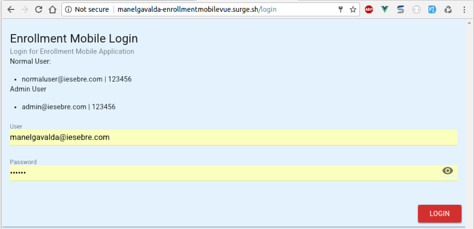Validació 2
Un cop dins veiem que ens agafarà les dades del nostre usuari ja que el tenim lligat amb la taula perosn, podem editar-ho. Al fer click a següent és guardarà l'estat de la matrícula.
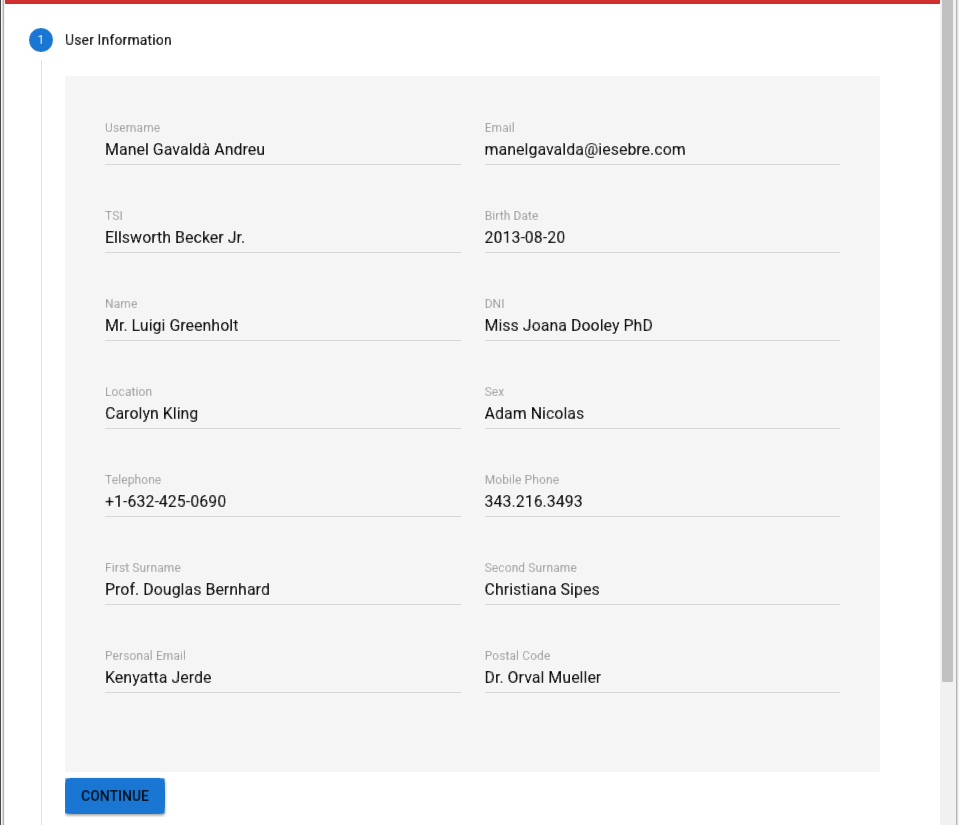Validació 3
Seleccionem l'enrollment que volem editar o no seleccionem cap per crear un de nou.
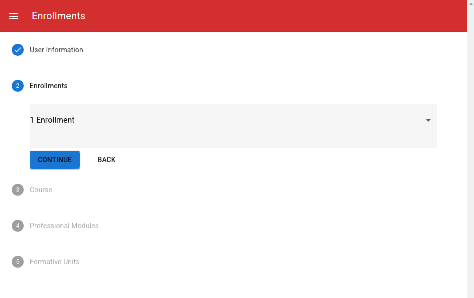Validació 4
Seleccionem el curs.
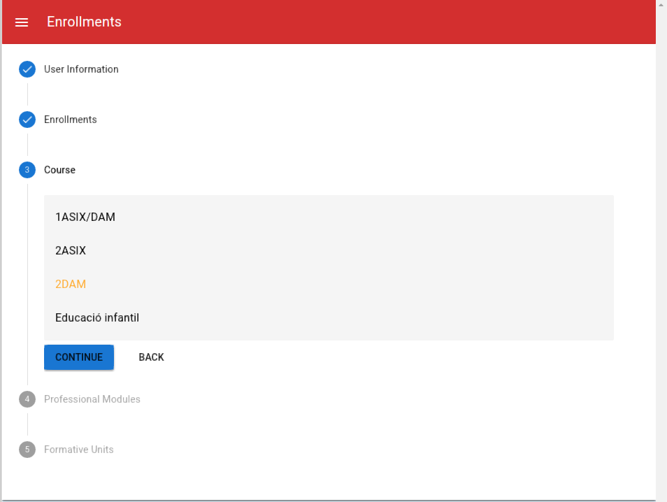Validació 5
Sel·leccionem els mòduls professionals que ens interessin.
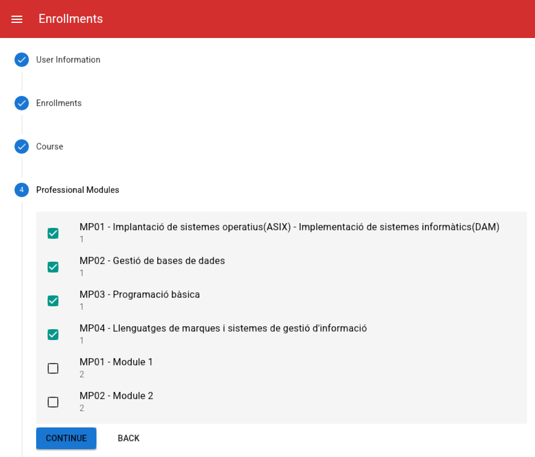Validació 6
Seleccionem les seves UFs.
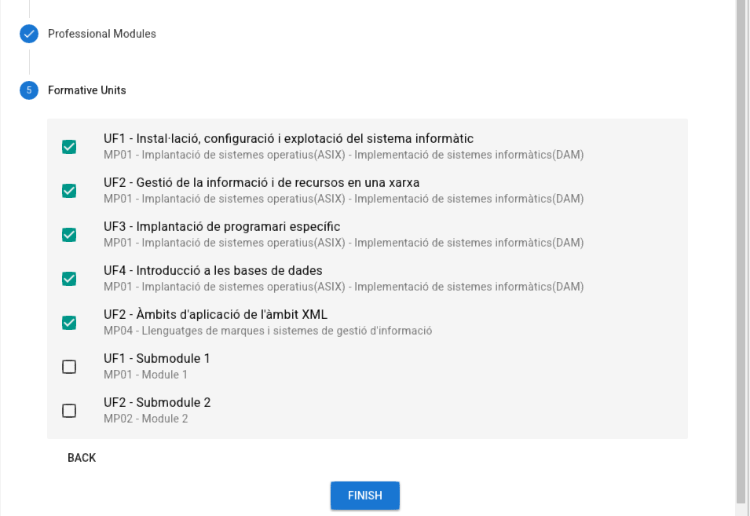Validació 7
Al finalitzar guardem la matrícula acabada i ens redirigirà a la nostra taula d'enrollments on podrem veure l'estat.
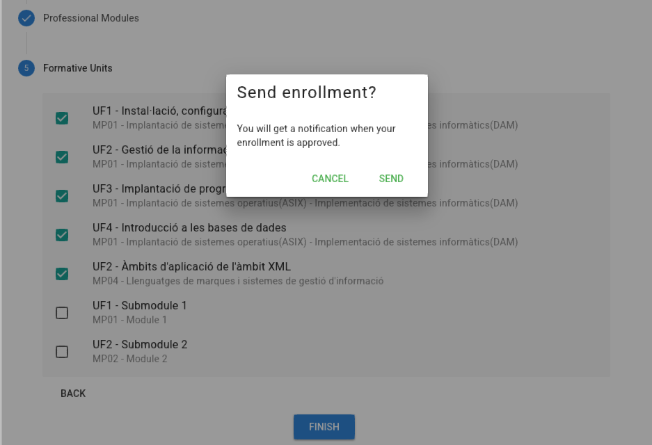Validació 8
Un cop aqui podem llistar les nostres matrícules creades.

Validació 9
Desde un usuari admin entrem a l'aplició admin.
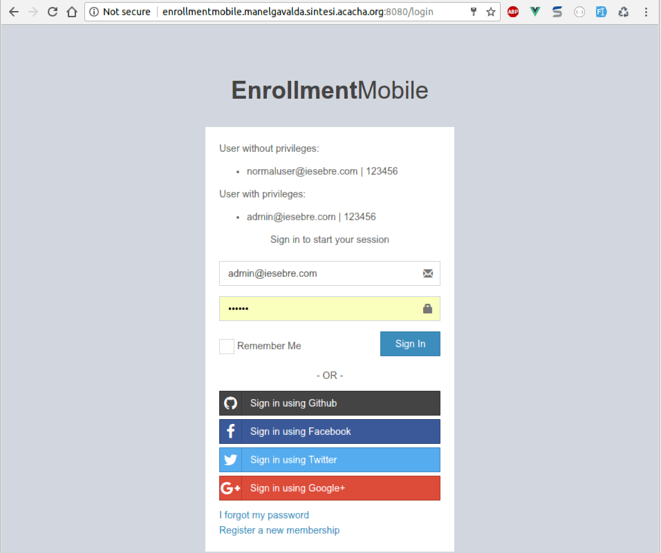Validació 10
Validem la matrícula
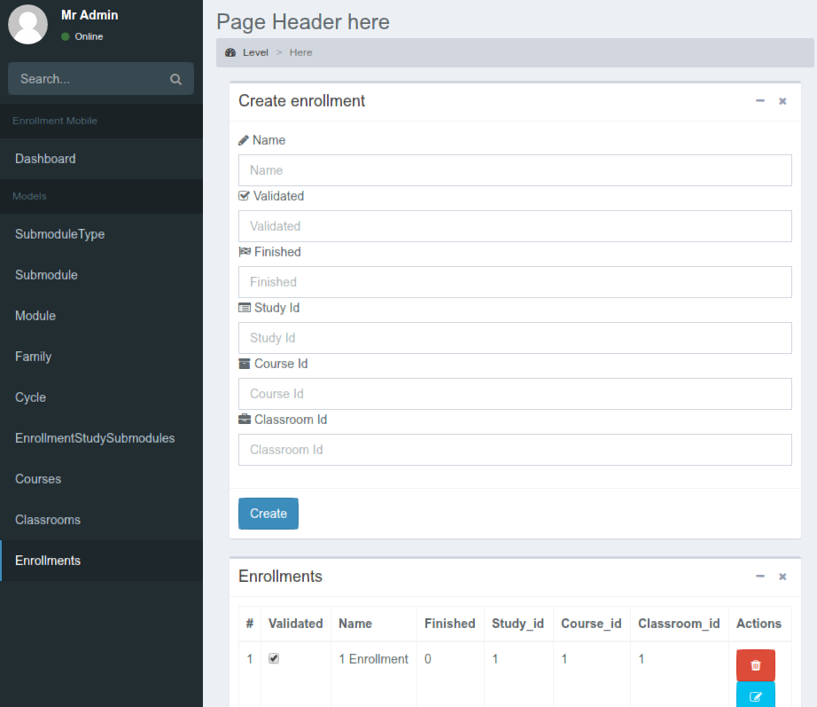Validació 11
I desde el client veurem que està validada.
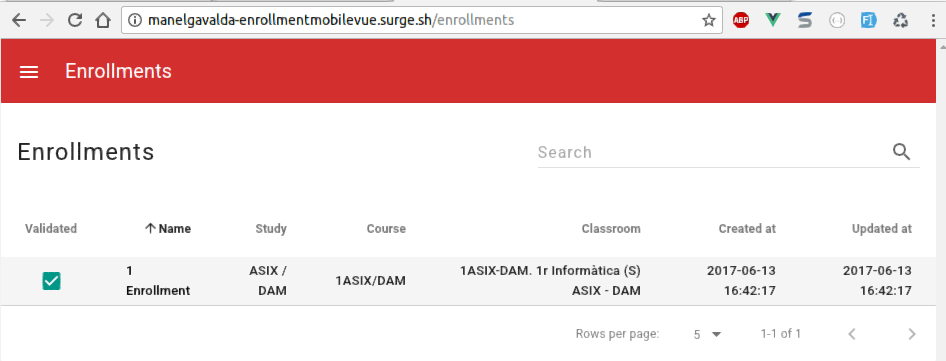Arquitectura del projecte
Paquet Composer
Component principal del projecte que conté
tot el codi necessari i les migracions
per al funcionament,
tant de la part d'administració(web),
com per la part d'usuari(mòbil).
Pàgina Administració
Component del projecte amb l'estructura laravel
necessaria per comprovar el bon funcionament
del paquet i adminitrar les matrícules.
Utilitza la plantilla adminlte amb el projecte
adminlte/laravel.
Aplicació Mobile
Aplicació feta amb Vue i Cordova utilitzada
pels usuaris per crear les seves matrícules.
Utilitza la plantilla Vue Material amb
components Vuetify.
Arquitectura de l'API
Utilitza una API REST treballant amb format JSON i funcionant sobre un projecte Laravel, on envies peticions mitjançant un client http (en el meu cas axios) sobre el controlador de l'apl·licació i el control·lador et retorna la resposta de l'operació realitzada.
Rutes Web/Api
Podem veure que tots els models funcionen a partir de rutes resource i per tant és creen les routes d'un CRUD (CREATE, RETRIEVE, UPDATE, DELETE). Per les rutes web utilitzarem un GET amb el middleware de web i una vegada dins el mètode index del control·lador ens diferenciarà si volem una petició web o api.
+--------+-----------+------------------------------------------------------------------+-----------------------------------+------------------------------------------------------------------------------------------------------+--------------+
| Domain | Method | URI | Name | Action | Middleware |
+--------+-----------+------------------------------------------------------------------+-----------------------------------+------------------------------------------------------------------------------------------------------+--------------+
| | GET|HEAD | / | | Closure | web |
| | GET|HEAD | _debugbar/assets/javascript | debugbar.assets.js | Barryvdh\Debugbar\Controllers\AssetController@js | |
| | GET|HEAD | _debugbar/assets/stylesheets | debugbar.assets.css | Barryvdh\Debugbar\Controllers\AssetController@css | |
| | GET|HEAD | _debugbar/clockwork/{id} | debugbar.clockwork | Barryvdh\Debugbar\Controllers\OpenHandlerController@clockwork | |
| | GET|HEAD | _debugbar/open | debugbar.openhandler | Barryvdh\Debugbar\Controllers\OpenHandlerController@handle | |
| | GET|HEAD | _dusk/login/{userId}/{guard?} | | Laravel\Dusk\Http\Controllers\UserController@login | web |
| | GET|HEAD | _dusk/logout/{guard?} | | Laravel\Dusk\Http\Controllers\UserController@logout | web |
| | GET|HEAD | _dusk/user/{guard?} | | Laravel\Dusk\Http\Controllers\UserController@user | web |
| | GET|HEAD | activity-feed | | Scool\EnrollmentMobile\Http\Controllers\DashboardController@fetchActivityFeed | web,auth |
| | POST | api/v1/classrooms | classrooms.store | Scool\EnrollmentMobile\Http\Controllers\ClassroomsController@store | auth:api |
| | GET|HEAD | api/v1/classrooms | classrooms.index | Scool\EnrollmentMobile\Http\Controllers\ClassroomsController@index | auth:api |
| | GET|HEAD | api/v1/classrooms/create | classrooms.create | Scool\EnrollmentMobile\Http\Controllers\ClassroomsController@create | auth:api |
| | DELETE | api/v1/classrooms/{classroom} | classrooms.destroy | Scool\EnrollmentMobile\Http\Controllers\ClassroomsController@destroy | auth:api |
| | PUT|PATCH | api/v1/classrooms/{classroom} | classrooms.update | Scool\EnrollmentMobile\Http\Controllers\ClassroomsController@update | auth:api |
| | GET|HEAD | api/v1/classrooms/{classroom} | classrooms.show | Scool\EnrollmentMobile\Http\Controllers\ClassroomsController@show | auth:api |
| | GET|HEAD | api/v1/classrooms/{classroom}/edit | classrooms.edit | Scool\EnrollmentMobile\Http\Controllers\ClassroomsController@edit | auth:api |
| | POST | api/v1/courses | courses.store | Scool\EnrollmentMobile\Http\Controllers\CoursesController@store | auth:api |
| | GET|HEAD | api/v1/courses | courses.index | Scool\EnrollmentMobile\Http\Controllers\CoursesController@index | auth:api |
| | GET|HEAD | api/v1/courses/create | courses.create | Scool\EnrollmentMobile\Http\Controllers\CoursesController@create | auth:api |
| | PUT|PATCH | api/v1/courses/{course} | courses.update | Scool\EnrollmentMobile\Http\Controllers\CoursesController@update | auth:api |
| | DELETE | api/v1/courses/{course} | courses.destroy | Scool\EnrollmentMobile\Http\Controllers\CoursesController@destroy | auth:api |
| | GET|HEAD | api/v1/courses/{course} | courses.show | Scool\EnrollmentMobile\Http\Controllers\CoursesController@show | auth:api |
| | GET|HEAD | api/v1/courses/{course}/edit | courses.edit | Scool\EnrollmentMobile\Http\Controllers\CoursesController@edit | auth:api |
| | GET|HEAD | api/v1/cycles | cycles.index | Scool\EnrollmentMobile\Http\Controllers\CyclesController@index | auth:api |
| | POST | api/v1/cycles | cycles.store | Scool\EnrollmentMobile\Http\Controllers\CyclesController@store | auth:api |
| | GET|HEAD | api/v1/cycles/create | cycles.create | Scool\EnrollmentMobile\Http\Controllers\CyclesController@create | auth:api |
| | GET|HEAD | api/v1/cycles/{cycle} | cycles.show | Scool\EnrollmentMobile\Http\Controllers\CyclesController@show | auth:api |
| | DELETE | api/v1/cycles/{cycle} | cycles.destroy | Scool\EnrollmentMobile\Http\Controllers\CyclesController@destroy | auth:api |
| | PUT|PATCH | api/v1/cycles/{cycle} | cycles.update | Scool\EnrollmentMobile\Http\Controllers\CyclesController@update | auth:api |
| | GET|HEAD | api/v1/cycles/{cycle}/edit | cycles.edit | Scool\EnrollmentMobile\Http\Controllers\CyclesController@edit | auth:api |
| | POST | api/v1/dashboard | dashboard.store | Scool\EnrollmentMobile\Http\Controllers\DashboardController@store | auth:api |
| | GET|HEAD | api/v1/dashboard | dashboard.index | Scool\EnrollmentMobile\Http\Controllers\DashboardController@index | auth:api |
| | GET|HEAD | api/v1/dashboard/create | dashboard.create | Scool\EnrollmentMobile\Http\Controllers\DashboardController@create | auth:api |
| | GET|HEAD | api/v1/dashboard/{dashboard} | dashboard.show | Scool\EnrollmentMobile\Http\Controllers\DashboardController@show | auth:api |
| | PUT|PATCH | api/v1/dashboard/{dashboard} | dashboard.update | Scool\EnrollmentMobile\Http\Controllers\DashboardController@update | auth:api |
| | DELETE | api/v1/dashboard/{dashboard} | dashboard.destroy | Scool\EnrollmentMobile\Http\Controllers\DashboardController@destroy | auth:api |
| | GET|HEAD | api/v1/dashboard/{dashboard}/edit | dashboard.edit | Scool\EnrollmentMobile\Http\Controllers\DashboardController@edit | auth:api |
| | GET|HEAD | api/v1/enrollmentStudySubmodules | enrollmentStudySubmodules.index | Scool\EnrollmentMobile\Http\Controllers\EnrollmentStudySubmodulesController@index | auth:api |
| | POST | api/v1/enrollmentStudySubmodules | enrollmentStudySubmodules.store | Scool\EnrollmentMobile\Http\Controllers\EnrollmentStudySubmodulesController@store | auth:api |
| | GET|HEAD | api/v1/enrollmentStudySubmodules/create | enrollmentStudySubmodules.create | Scool\EnrollmentMobile\Http\Controllers\EnrollmentStudySubmodulesController@create | auth:api |
| | PUT|PATCH | api/v1/enrollmentStudySubmodules/{enrollmentStudySubmodule} | enrollmentStudySubmodules.update | Scool\EnrollmentMobile\Http\Controllers\EnrollmentStudySubmodulesController@update | auth:api |
| | GET|HEAD | api/v1/enrollmentStudySubmodules/{enrollmentStudySubmodule} | enrollmentStudySubmodules.show | Scool\EnrollmentMobile\Http\Controllers\EnrollmentStudySubmodulesController@show | auth:api |
| | DELETE | api/v1/enrollmentStudySubmodules/{enrollmentStudySubmodule} | enrollmentStudySubmodules.destroy | Scool\EnrollmentMobile\Http\Controllers\EnrollmentStudySubmodulesController@destroy | auth:api |
| | GET|HEAD | api/v1/enrollmentStudySubmodules/{enrollmentStudySubmodule}/edit | enrollmentStudySubmodules.edit | Scool\EnrollmentMobile\Http\Controllers\EnrollmentStudySubmodulesController@edit | auth:api |
| | POST | api/v1/enrollments | enrollments.store | Scool\EnrollmentMobile\Http\Controllers\EnrollmentsController@store | auth:api |
| | GET|HEAD | api/v1/enrollments | enrollments.index | Scool\EnrollmentMobile\Http\Controllers\EnrollmentsController@index | auth:api |
| | GET|HEAD | api/v1/enrollments/create | enrollments.create | Scool\EnrollmentMobile\Http\Controllers\EnrollmentsController@create | auth:api |
| | DELETE | api/v1/enrollments/{enrollment} | enrollments.destroy | Scool\EnrollmentMobile\Http\Controllers\EnrollmentsController@destroy | auth:api |
| | GET|HEAD | api/v1/enrollments/{enrollment} | enrollments.show | Scool\EnrollmentMobile\Http\Controllers\EnrollmentsController@show | auth:api |
| | PUT|PATCH | api/v1/enrollments/{enrollment} | enrollments.update | Scool\EnrollmentMobile\Http\Controllers\EnrollmentsController@update | auth:api |
| | GET|HEAD | api/v1/enrollments/{enrollment}/edit | enrollments.edit | Scool\EnrollmentMobile\Http\Controllers\EnrollmentsController@edit | auth:api |
| | GET|HEAD | api/v1/enrollments_from_user | | Closure | auth:api |
| | GET|HEAD | api/v1/modules | modules.index | Scool\EnrollmentMobile\Http\Controllers\ModulesController@index | auth:api |
| | POST | api/v1/modules | modules.store | Scool\EnrollmentMobile\Http\Controllers\ModulesController@store | auth:api |
| | GET|HEAD | api/v1/modules/create | modules.create | Scool\EnrollmentMobile\Http\Controllers\ModulesController@create | auth:api |
| | DELETE | api/v1/modules/{module} | modules.destroy | Scool\EnrollmentMobile\Http\Controllers\ModulesController@destroy | auth:api |
| | PUT|PATCH | api/v1/modules/{module} | modules.update | Scool\EnrollmentMobile\Http\Controllers\ModulesController@update | auth:api |
| | GET|HEAD | api/v1/modules/{module} | modules.show | Scool\EnrollmentMobile\Http\Controllers\ModulesController@show | auth:api |
| | GET|HEAD | api/v1/modules/{module}/edit | modules.edit | Scool\EnrollmentMobile\Http\Controllers\ModulesController@edit | auth:api |
| | POST | api/v1/modules_from_course | | Closure | auth:api |
| | GET|HEAD | api/v1/people | people.index | Scool\EnrollmentMobile\Http\Controllers\PeopleController@index | auth:api |
| | POST | api/v1/people | people.store | Scool\EnrollmentMobile\Http\Controllers\PeopleController@store | auth:api |
| | GET|HEAD | api/v1/people/create | people.create | Scool\EnrollmentMobile\Http\Controllers\PeopleController@create | auth:api |
| | GET|HEAD | api/v1/people/{person} | people.show | Scool\EnrollmentMobile\Http\Controllers\PeopleController@show | auth:api |
| | DELETE | api/v1/people/{person} | people.destroy | Scool\EnrollmentMobile\Http\Controllers\PeopleController@destroy | auth:api |
| | PUT|PATCH | api/v1/people/{person} | people.update | Scool\EnrollmentMobile\Http\Controllers\PeopleController@update | auth:api |
| | GET|HEAD | api/v1/people/{person}/edit | people.edit | Scool\EnrollmentMobile\Http\Controllers\PeopleController@edit | auth:api |
| | GET|HEAD | api/v1/person_from_user | | Closure | auth:api |
| | POST | api/v1/submoduleTypes | submoduleTypes.store | Scool\EnrollmentMobile\Http\Controllers\SubmoduleTypesController@store | auth:api |
| | GET|HEAD | api/v1/submoduleTypes | submoduleTypes.index | Scool\EnrollmentMobile\Http\Controllers\SubmoduleTypesController@index | auth:api |
| | GET|HEAD | api/v1/submoduleTypes/create | submoduleTypes.create | Scool\EnrollmentMobile\Http\Controllers\SubmoduleTypesController@create | auth:api |
| | GET|HEAD | api/v1/submoduleTypes/{submoduleType} | submoduleTypes.show | Scool\EnrollmentMobile\Http\Controllers\SubmoduleTypesController@show | auth:api |
| | DELETE | api/v1/submoduleTypes/{submoduleType} | submoduleTypes.destroy | Scool\EnrollmentMobile\Http\Controllers\SubmoduleTypesController@destroy | auth:api |
| | PUT|PATCH | api/v1/submoduleTypes/{submoduleType} | submoduleTypes.update | Scool\EnrollmentMobile\Http\Controllers\SubmoduleTypesController@update | auth:api |
| | GET|HEAD | api/v1/submoduleTypes/{submoduleType}/edit | submoduleTypes.edit | Scool\EnrollmentMobile\Http\Controllers\SubmoduleTypesController@edit | auth:api |
| | GET|HEAD | api/v1/submodules | submodules.index | Scool\EnrollmentMobile\Http\Controllers\SubmodulesController@index | auth:api |
| | POST | api/v1/submodules | submodules.store | Scool\EnrollmentMobile\Http\Controllers\SubmodulesController@store | auth:api |
| | GET|HEAD | api/v1/submodules/create | submodules.create | Scool\EnrollmentMobile\Http\Controllers\SubmodulesController@create | auth:api |
| | PUT|PATCH | api/v1/submodules/{submodule} | submodules.update | Scool\EnrollmentMobile\Http\Controllers\SubmodulesController@update | auth:api |
| | GET|HEAD | api/v1/submodules/{submodule} | submodules.show | Scool\EnrollmentMobile\Http\Controllers\SubmodulesController@show | auth:api |
| | DELETE | api/v1/submodules/{submodule} | submodules.destroy | Scool\EnrollmentMobile\Http\Controllers\SubmodulesController@destroy | auth:api |
| | GET|HEAD | api/v1/submodules/{submodule}/edit | submodules.edit | Scool\EnrollmentMobile\Http\Controllers\SubmodulesController@edit | auth:api |
| | GET|HEAD | api/v1/user | | Closure | api,auth:api |
| | GET|HEAD | auth/{socialProvider} | | Acacha\LaravelSocial\Http\Controllers\SocialProvidersController@redirectToProvider | web |
| | GET|HEAD | auth/{socialProvider}/callback | | Acacha\LaravelSocial\Http\Controllers\SocialProvidersController@handleProviderCallback | web |
| | GET|HEAD | classrooms | classrooms.index | Scool\EnrollmentMobile\Http\Controllers\ClassroomsController@index | web,auth |
| | POST | classrooms | classrooms.store | Scool\EnrollmentMobile\Http\Controllers\ClassroomsController@store | web,auth |
| | GET|HEAD | classrooms/create | classrooms.create | Scool\EnrollmentMobile\Http\Controllers\ClassroomsController@create | web,auth |
| | DELETE | classrooms/{classroom} | classrooms.destroy | Scool\EnrollmentMobile\Http\Controllers\ClassroomsController@destroy | web,auth |
| | PUT|PATCH | classrooms/{classroom} | classrooms.update | Scool\EnrollmentMobile\Http\Controllers\ClassroomsController@update | web,auth |
| | GET|HEAD | classrooms/{classroom} | classrooms.show | Scool\EnrollmentMobile\Http\Controllers\ClassroomsController@show | web,auth |
| | GET|HEAD | classrooms/{classroom}/edit | classrooms.edit | Scool\EnrollmentMobile\Http\Controllers\ClassroomsController@edit | web,auth |
| | POST | courses | courses.store | Scool\EnrollmentMobile\Http\Controllers\CoursesController@store | web,auth |
| | GET|HEAD | courses | courses.index | Scool\EnrollmentMobile\Http\Controllers\CoursesController@index | web,auth |
| | GET|HEAD | courses/create | courses.create | Scool\EnrollmentMobile\Http\Controllers\CoursesController@create | web,auth |
| | PUT|PATCH | courses/{course} | courses.update | Scool\EnrollmentMobile\Http\Controllers\CoursesController@update | web,auth |
| | DELETE | courses/{course} | courses.destroy | Scool\EnrollmentMobile\Http\Controllers\CoursesController@destroy | web,auth |
| | GET|HEAD | courses/{course} | courses.show | Scool\EnrollmentMobile\Http\Controllers\CoursesController@show | web,auth |
| | GET|HEAD | courses/{course}/edit | courses.edit | Scool\EnrollmentMobile\Http\Controllers\CoursesController@edit | web,auth |
| | GET|HEAD | create/random/{model} | createRandom | Scool\EnrollmentMobile\Http\Controllers\DashboardController@createRandom | web,auth |
| | GET|HEAD | cycles | cycles.index | Scool\EnrollmentMobile\Http\Controllers\CyclesController@index | web,auth |
| | POST | cycles | cycles.store | Scool\EnrollmentMobile\Http\Controllers\CyclesController@store | web,auth |
| | GET|HEAD | cycles/create | cycles.create | Scool\EnrollmentMobile\Http\Controllers\CyclesController@create | web,auth |
| | GET|HEAD | cycles/{cycle} | cycles.show | Scool\EnrollmentMobile\Http\Controllers\CyclesController@show | web,auth |
| | PUT|PATCH | cycles/{cycle} | cycles.update | Scool\EnrollmentMobile\Http\Controllers\CyclesController@update | web,auth |
| | DELETE | cycles/{cycle} | cycles.destroy | Scool\EnrollmentMobile\Http\Controllers\CyclesController@destroy | web,auth |
| | GET|HEAD | cycles/{cycle}/edit | cycles.edit | Scool\EnrollmentMobile\Http\Controllers\CyclesController@edit | web,auth |
| | POST | dashboard | dashboard.store | Scool\EnrollmentMobile\Http\Controllers\DashboardController@store | web,auth |
| | GET|HEAD | dashboard | dashboard.index | Scool\EnrollmentMobile\Http\Controllers\DashboardController@index | web,auth |
| | GET|HEAD | dashboard/create | dashboard.create | Scool\EnrollmentMobile\Http\Controllers\DashboardController@create | web,auth |
| | PUT|PATCH | dashboard/{dashboard} | dashboard.update | Scool\EnrollmentMobile\Http\Controllers\DashboardController@update | web,auth |
| | DELETE | dashboard/{dashboard} | dashboard.destroy | Scool\EnrollmentMobile\Http\Controllers\DashboardController@destroy | web,auth |
| | GET|HEAD | dashboard/{dashboard} | dashboard.show | Scool\EnrollmentMobile\Http\Controllers\DashboardController@show | web,auth |
| | GET|HEAD | dashboard/{dashboard}/edit | dashboard.edit | Scool\EnrollmentMobile\Http\Controllers\DashboardController@edit | web,auth |
| | GET|HEAD | dashboard/{model}/number | model-number | Scool\EnrollmentMobile\Http\Controllers\DashboardController@Number | web,auth |
| | GET|HEAD | enrollment/pdf/{id} | | Manelgavalda\EnrollmentMobileTest\Http\Controllers\PdfController@enrollment | web |
| | GET|HEAD | enrollmentStudySubmodules | enrollmentStudySubmodules.index | Scool\EnrollmentMobile\Http\Controllers\EnrollmentStudySubmodulesController@index | web,auth |
| | POST | enrollmentStudySubmodules | enrollmentStudySubmodules.store | Scool\EnrollmentMobile\Http\Controllers\EnrollmentStudySubmodulesController@store | web,auth |
| | GET|HEAD | enrollmentStudySubmodules/create | enrollmentStudySubmodules.create | Scool\EnrollmentMobile\Http\Controllers\EnrollmentStudySubmodulesController@create | web,auth |
| | GET|HEAD | enrollmentStudySubmodules/{enrollmentStudySubmodule} | enrollmentStudySubmodules.show | Scool\EnrollmentMobile\Http\Controllers\EnrollmentStudySubmodulesController@show | web,auth |
| | PUT|PATCH | enrollmentStudySubmodules/{enrollmentStudySubmodule} | enrollmentStudySubmodules.update | Scool\EnrollmentMobile\Http\Controllers\EnrollmentStudySubmodulesController@update | web,auth |
| | DELETE | enrollmentStudySubmodules/{enrollmentStudySubmodule} | enrollmentStudySubmodules.destroy | Scool\EnrollmentMobile\Http\Controllers\EnrollmentStudySubmodulesController@destroy | web,auth |
| | GET|HEAD | enrollmentStudySubmodules/{enrollmentStudySubmodule}/edit | enrollmentStudySubmodules.edit | Scool\EnrollmentMobile\Http\Controllers\EnrollmentStudySubmodulesController@edit | web,auth |
| | GET|HEAD | enrollments | enrollments.index | Scool\EnrollmentMobile\Http\Controllers\EnrollmentsController@index | web,auth |
| | POST | enrollments | enrollments.store | Scool\EnrollmentMobile\Http\Controllers\EnrollmentsController@store | web,auth |
| | GET|HEAD | enrollments/create | enrollments.create | Scool\EnrollmentMobile\Http\Controllers\EnrollmentsController@create | web,auth |
| | GET|HEAD | enrollments/{enrollment} | enrollments.show | Scool\EnrollmentMobile\Http\Controllers\EnrollmentsController@show | web,auth |
| | PUT|PATCH | enrollments/{enrollment} | enrollments.update | Scool\EnrollmentMobile\Http\Controllers\EnrollmentsController@update | web,auth |
| | DELETE | enrollments/{enrollment} | enrollments.destroy | Scool\EnrollmentMobile\Http\Controllers\EnrollmentsController@destroy | web,auth |
| | GET|HEAD | enrollments/{enrollment}/edit | enrollments.edit | Scool\EnrollmentMobile\Http\Controllers\EnrollmentsController@edit | web,auth |
| | GET|HEAD | enrollmentspdf/pdf | | Manelgavalda\EnrollmentMobileTest\Http\Controllers\PdfController@enrollments | web |
| | GET|HEAD | enrollmentspdf/view | | Manelgavalda\EnrollmentMobileTest\Http\Controllers\PdfController@enrollments_view | web |
| | GET|HEAD | families | families.index | Scool\EnrollmentMobile\Http\Controllers\FamiliesController@index | web,auth |
| | POST | families | families.store | Scool\EnrollmentMobile\Http\Controllers\FamiliesController@store | web,auth |
| | GET|HEAD | families/create | families.create | Scool\EnrollmentMobile\Http\Controllers\FamiliesController@create | web,auth |
| | DELETE | families/{family} | families.destroy | Scool\EnrollmentMobile\Http\Controllers\FamiliesController@destroy | web,auth |
| | GET|HEAD | families/{family} | families.show | Scool\EnrollmentMobile\Http\Controllers\FamiliesController@show | web,auth |
| | PUT|PATCH | families/{family} | families.update | Scool\EnrollmentMobile\Http\Controllers\FamiliesController@update | web,auth |
| | GET|HEAD | families/{family}/edit | families.edit | Scool\EnrollmentMobile\Http\Controllers\FamiliesController@edit | web,auth |
| | GET|HEAD | home | | Manelgavalda\EnrollmentMobileTest\Http\Controllers\HomeController@index | web,auth |
| | POST | login | | Manelgavalda\EnrollmentMobileTest\Http\Controllers\Auth\LoginController@login | web,guest |
| | GET|HEAD | login | login | Manelgavalda\EnrollmentMobileTest\Http\Controllers\Auth\LoginController@showLoginForm | web,guest |
| | POST | logout | logout | Manelgavalda\EnrollmentMobileTest\Http\Controllers\Auth\LoginController@logout | web |
| | GET|HEAD | mail | | Manelgavalda\EnrollmentMobileTest\Http\Controllers\HomeController@mail | web,auth |
| | GET|HEAD | modules | modules.index | Scool\EnrollmentMobile\Http\Controllers\ModulesController@index | web,auth |
| | POST | modules | modules.store | Scool\EnrollmentMobile\Http\Controllers\ModulesController@store | web,auth |
| | GET|HEAD | modules/create | modules.create | Scool\EnrollmentMobile\Http\Controllers\ModulesController@create | web,auth |
| | DELETE | modules/{module} | modules.destroy | Scool\EnrollmentMobile\Http\Controllers\ModulesController@destroy | web,auth |
| | PUT|PATCH | modules/{module} | modules.update | Scool\EnrollmentMobile\Http\Controllers\ModulesController@update | web,auth |
| | GET|HEAD | modules/{module} | modules.show | Scool\EnrollmentMobile\Http\Controllers\ModulesController@show | web,auth |
| | GET|HEAD | modules/{module}/edit | modules.edit | Scool\EnrollmentMobile\Http\Controllers\ModulesController@edit | web,auth |
| | POST | oauth/authorize | | \Laravel\Passport\Http\Controllers\ApproveAuthorizationController@approve | web,auth |
| | GET|HEAD | oauth/authorize | | \Laravel\Passport\Http\Controllers\AuthorizationController@authorize | web,auth |
| | DELETE | oauth/authorize | | \Laravel\Passport\Http\Controllers\DenyAuthorizationController@deny | web,auth |
| | POST | oauth/clients | | \Laravel\Passport\Http\Controllers\ClientController@store | web,auth |
| | GET|HEAD | oauth/clients | | \Laravel\Passport\Http\Controllers\ClientController@forUser | web,auth |
| | DELETE | oauth/clients/{client_id} | | \Laravel\Passport\Http\Controllers\ClientController@destroy | web,auth |
| | PUT | oauth/clients/{client_id} | | \Laravel\Passport\Http\Controllers\ClientController@update | web,auth |
| | GET|HEAD | oauth/personal-access-tokens | | \Laravel\Passport\Http\Controllers\PersonalAccessTokenController@forUser | web,auth |
| | POST | oauth/personal-access-tokens | | \Laravel\Passport\Http\Controllers\PersonalAccessTokenController@store | web,auth |
| | DELETE | oauth/personal-access-tokens/{token_id} | | \Laravel\Passport\Http\Controllers\PersonalAccessTokenController@destroy | web,auth |
| | GET|HEAD | oauth/scopes | | \Laravel\Passport\Http\Controllers\ScopeController@all | web,auth |
| | POST | oauth/token | | \Laravel\Passport\Http\Controllers\AccessTokenController@issueToken | throttle |
| | POST | oauth/token/refresh | | \Laravel\Passport\Http\Controllers\TransientTokenController@refresh | web,auth |
| | GET|HEAD | oauth/tokens | | \Laravel\Passport\Http\Controllers\AuthorizedAccessTokenController@forUser | web,auth |
| | DELETE | oauth/tokens/{token_id} | | \Laravel\Passport\Http\Controllers\AuthorizedAccessTokenController@destroy | web,auth |
| | POST | password/email | password.email | Manelgavalda\EnrollmentMobileTest\Http\Controllers\Auth\ForgotPasswordController@sendResetLinkEmail | web,guest |
| | GET|HEAD | password/reset | password.request | Manelgavalda\EnrollmentMobileTest\Http\Controllers\Auth\ForgotPasswordController@showLinkRequestForm | web,guest |
| | POST | password/reset | | Manelgavalda\EnrollmentMobileTest\Http\Controllers\Auth\ResetPasswordController@reset | web,guest |
| | GET|HEAD | password/reset/{token} | password.reset | Manelgavalda\EnrollmentMobileTest\Http\Controllers\Auth\ResetPasswordController@showResetForm | web,guest |
| | POST | people | people.store | Scool\EnrollmentMobile\Http\Controllers\PeopleController@store | web,auth |
| | GET|HEAD | people | people.index | Scool\EnrollmentMobile\Http\Controllers\PeopleController@index | web,auth |
| | GET|HEAD | people/create | people.create | Scool\EnrollmentMobile\Http\Controllers\PeopleController@create | web,auth |
| | PUT|PATCH | people/{person} | people.update | Scool\EnrollmentMobile\Http\Controllers\PeopleController@update | web,auth |
| | DELETE | people/{person} | people.destroy | Scool\EnrollmentMobile\Http\Controllers\PeopleController@destroy | web,auth |
| | GET|HEAD | people/{person} | people.show | Scool\EnrollmentMobile\Http\Controllers\PeopleController@show | web,auth |
| | GET|HEAD | people/{person}/edit | people.edit | Scool\EnrollmentMobile\Http\Controllers\PeopleController@edit | web,auth |
| | GET|HEAD | profile/tokens | | Closure | web,auth |
| | GET|HEAD | register | register | Manelgavalda\EnrollmentMobileTest\Http\Controllers\Auth\RegisterController@showRegistrationForm | web,guest |
| | POST | register | | Manelgavalda\EnrollmentMobileTest\Http\Controllers\Auth\RegisterController@register | web,guest |
| | GET|HEAD | submoduleTypes | submoduleTypes.index | Scool\EnrollmentMobile\Http\Controllers\SubmoduleTypesController@index | web,auth |
| | POST | submoduleTypes | submoduleTypes.store | Scool\EnrollmentMobile\Http\Controllers\SubmoduleTypesController@store | web,auth |
| | GET|HEAD | submoduleTypes/create | submoduleTypes.create | Scool\EnrollmentMobile\Http\Controllers\SubmoduleTypesController@create | web,auth |
| | GET|HEAD | submoduleTypes/{submoduleType} | submoduleTypes.show | Scool\EnrollmentMobile\Http\Controllers\SubmoduleTypesController@show | web,auth |
| | DELETE | submoduleTypes/{submoduleType} | submoduleTypes.destroy | Scool\EnrollmentMobile\Http\Controllers\SubmoduleTypesController@destroy | web,auth |
| | PUT|PATCH | submoduleTypes/{submoduleType} | submoduleTypes.update | Scool\EnrollmentMobile\Http\Controllers\SubmoduleTypesController@update | web,auth |
| | GET|HEAD | submoduleTypes/{submoduleType}/edit | submoduleTypes.edit | Scool\EnrollmentMobile\Http\Controllers\SubmoduleTypesController@edit | web,auth |
| | POST | submodules | submodules.store | Scool\EnrollmentMobile\Http\Controllers\SubmodulesController@store | web,auth |
| | GET|HEAD | submodules | submodules.index | Scool\EnrollmentMobile\Http\Controllers\SubmodulesController@index | web,auth |
| | GET|HEAD | submodules/create | submodules.create | Scool\EnrollmentMobile\Http\Controllers\SubmodulesController@create | web,auth |
| | GET|HEAD | submodules/{submodule} | submodules.show | Scool\EnrollmentMobile\Http\Controllers\SubmodulesController@show | web,auth |
| | DELETE | submodules/{submodule} | submodules.destroy | Scool\EnrollmentMobile\Http\Controllers\SubmodulesController@destroy | web,auth |
| | PUT|PATCH | submodules/{submodule} | submodules.update | Scool\EnrollmentMobile\Http\Controllers\SubmodulesController@update | web,auth |
| | GET|HEAD | submodules/{submodule}/edit | submodules.edit | Scool\EnrollmentMobile\Http\Controllers\SubmodulesController@edit | web,auth |
+--------+-----------+------------------------------------------------------------------+-----------------------------------+------------------------------------------------------------------------------------------------------+--------------+
Fitxer de rutes
'web'], function () {
Route::group(['middleware' => 'auth'], function () {
Route::resource('enrollments', 'EnrollmentsController');
Route::resource('classrooms', 'ClassroomsController');
Route::resource('courses', 'CoursesController');
Route::resource('enrollmentStudySubmodules', 'EnrollmentStudySubmodulesController');
Route::resource('families', 'FamiliesController');
Route::resource('modules', 'ModulesController');
Route::resource('cycles', 'CyclesController');
Route::resource('submodules', 'SubmodulesController');
Route::resource('submoduleTypes', 'SubmoduleTypesController');
Route::resource('dashboard', 'DashboardController');
Route::resource('people', 'PeopleController');
//Dashboard
Route::get('activity-feed', 'DashboardController@fetchActivityFeed');
Route::get('dashboard/{model}/number', 'DashboardController@Number')->name('model-number');
Route::get('create/random/{model}', 'DashboardController@createRandom')->name('createRandom');
});
});
Route::group([
'middleware' => 'auth:api',
'prefix' => 'api',
], function () {
//Route::group(['prefix' => 'v1','middleware' => 'auth:api'], function () {
Route::group(['prefix' => 'v1'], function () {
Route::resource('enrollments', 'EnrollmentsController');
Route::resource('classrooms', 'ClassroomsController');
Route::resource('courses', 'CoursesController');
Route::resource('enrollmentStudySubmodules', 'EnrollmentStudySubmodulesController');
Route::resource('modules', 'ModulesController');
Route::resource('cycles', 'CyclesController');
Route::resource('submodules', 'SubmodulesController');
Route::resource('submoduleTypes', 'SubmoduleTypesController');
Route::resource('dashboard', 'DashboardController');
Route::resource('people', 'PeopleController');
Route::get('/enrollments_from_user', function (Request $request) {
// return Enrollment::all();
// $user = Auth::user();
$enrollment_id = Auth::user()->enrollment_id;
return Enrollment::find($enrollment_id);
});
Route::get('/person_from_user', function (Request $request) {
// return Enrollment::all();
// $user = Auth::user();
$user_id = Auth::user()->person_id;
return Person::find($user_id);
});
Route::post('/modules_from_course', function (Request $request) {
// return Enrollment::all();
// $user = Auth::user();
return Person::find($user_id);
});
});
});
Aqui tenim les rutes necessaries per al funcionament del paquet. Com podem veure utilitzem el middleware web i auth per les rutes web, i el middleware auth:api (passport) amb prefix "api/v1" per control·lar que tingues autorització(token) per fer les peticions.
Codi Control·lador
public function index(EnrollmentBrowseRequest $request)
{
$this->repository->pushCriteria(app('Prettus\Repository\Criteria\RequestCriteria'));
$enrollments = $this->repository->with(['classroom', 'course', 'study'])->all();
if (request()->wantsJson()) {
return response()->json([
'data' => $enrollments,
]);
}
return view('enrollment_mobile::enrollments.index', compact('enrollments'));
return view('enrollment_mobile::enrollments.index', compact('enrollments'));
}
- El retorno amb les seves rel·lacions de cursos i estudis.
- Podem veure que utilitza en reposittory pattern amb els seus validadors i transformadors i el Request on ens retornarà un error si no tenim els rols per veure els objectes.
- El Reposittory Pattern diferència les peticions web de api per tant només necessitem 1 index per les 2 i ho control·larem si volem el json o el http indicant-ho al header (application/json).
Petició
Per control·lar si la petició és web o api, basicament ho farem indicant-ho al header al fer la petició. Amb Axios afegirem els headers així de forma global per no tindre que indicar-los a cada petició que farem.
window.axios.defaults.headers.common = {
'Authorization': 'Bearer ' + window.localStorage.getItem('token'),
'X-Requested-With': 'XMLHttpRequest',
'Accept': 'application/json'
- Headers:
- Authorization: ens servirà per indicar el token que la api ens retornarà per fer peticions. L'afegirem d'aquesta forma "Bearer + token" (Bearer dsiaSdi2)
- X-Requested-With: Tipus de petició que farem (XHR)
- Accept: Aqui li indiquem que la petició serà api, format json, ja que el Reposittory Pattern diferèncie d'aquesta forma les peticions webs i api.
Arquitectura del Frontend
El frontend està fet a partir d'un projecte creat amb vue-cli v2.8.2, i una vegada compil·lat afegir el resultat a una plantilla cordova creada amb cordova-cli v7.x. Funciona amb Vue v2.2.2, utilitzant Vue material v0.7.1 com a plantilla principal (tema i sidebar), i utilitzant els components de Vuetify v0.12.7.
Aplicació SPA (Single Page Application) que utilitza vue-router per la navegació i axios per fer peticions a la API
Rutes frontend
{
path: '/',
redirect: '/home',
meta: { auth: true },
component: Full,
children: [
{
path: 'home',
name: 'Home',
component: Home,
meta: { auth: true }
},
{
path: 'profile',
name: 'Profile',
component: Profile,
meta: { auth: true }
},
{
path: 'enrollments',
name: 'Enrollments',
component: Enrollments,
meta: { auth: true }
}
]
},
{
path: '/android_asset/www/index.html',
redirect: '/'
},
{
path: '/login',
component: Login,
meta: { auth: false },
children: [
{
path: 'login',
name: 'Login',
component: Login,
meta: { auth: false }
}
]
},
{
path: '*',
redirect: '/login',
meta: { auth: false }
}
En aquest cas per control·lar a quines rutes tenim acces utilitzem el meta {auth:true} per indicar les rutes que necessiten estar autenticats. Les rutes dins de children penjaran del component pare, en aquest cas totes les rutes menys la de login penjaran del component Full que conté la sidebar, footer i header.
Middleware
const router = new VueRouter({
// history mode html5 per borrar #
// mode: 'hash',
mode: 'history',
routes
// linkActiveClass: 'open active',
// scrollBehavior: () => ({ y: 0 })
})
router.beforeEach((to, from, next) => {
console.log(window.localStorage.getItem('system_id'))
if (to.meta.auth && !window.localStorage.getItem('token')) {
return next('/Login')
}
next()
})
Aqui tenim el middleware de l'aplicació que basicament control·lara que si estem nabegant però no tenim token ens retornarà al Login
Exemple de petició feta amb Axios sobre el controlador de enrollments per retornar-los.
getEnrollments () {
window.axios.get('/api/v1/enrollments')
.then((response) => {
this.enrollments = response.data.data
console.log('Enrollments')
console.log(response.data.data)
}, (err) => {
console.log(err)
})
},
- Petició amb l'objecte Axios( el necessitem instanciar al projecte).
- Guardem la data en una variable dins de data que li diem courses. Que és troba dins data.data de la petició
- Petició a ruta "resource" i al control·lador Restful per tant al fer un get sense paràmetres ens fa la petició desde el mètode index.
Bases de dades
La base de dades funciona amb mysql, i les taules estan creades a partir de les migracions de laravel. Disposo d'una taula per cada model i les relacions les tinc tant als model afectats com a la migració.
public function up()
{
Schema::create('enrollments', function (Blueprint $table) {
$table->increments('id'); //obligatori
$table->string('name'); //CAMP NO FORMA PART, només vull provar.
$table->boolean('validated')->nullable(); //només les vàlides són actives.
$table->boolean('finished')->nullable(); //indica si la matricula està finalitzada.
//$table->integer('period_id'); //De moment descartat //obligatori
$table->integer('user_id')->unsigned()->nullable(); //indica si la matricula està finalitzada.
$table->integer('classroom_id')->unsigned()->nullable(); //indica si la matricula està finalitzada.
$table->integer('study_id')->unsigned()->nullable();
$table->integer('course_id')->unsigned()->nullable();
$table->timestamps(); //timestamps
// $table->foreign('classroom_id')->references('id')->on('classrooms'); //indica si la matricula està finalitzada.
// $table->foreign('study_id')->references('id')->on('studies');
// $table->foreign('course_id')->references('id')->on('courses');
});
}
/**
* Reverse the migrations.
*
* @return void
*/
public function down()
{
Schema::dropIfExists('enrollments');
}
Seeders
Els utilitzo per omplir la base de dades amb dades "reals" per desprès simul·lar operacions. Seeder principal aplicació on desprès el crido del projecte test per omplir totes les taules.
public function run()
{
$this->call(EnrollmentPermissionSeeder::class);
$this->call(EnrollmentsTableSeeder::class);
$this->call(ClassroomsTableSeeder::class);
$this->call(CoursesTableSeeder::class);
$this->call(EnrollmentStudySubmodulesTableSeeder::class);
$this->call(PeopleTableSeeder::class);
$this->call(ModulesTableSeeder::class);
$this->call(SubmodulesTableSeeder::class);
$this->call(StudiesTableSeeder::class);
}
}
Factories
Defineixo com vull que s'omplin les taules si és tinguesen que crear amb dades aleatories. No les uso ja que faig servir seeders un cop acabada l'aplicació per tindre un exemple més real. Necessiten ser publicades per funcionar. Exemple enrollments plenats amb faker
$factory->define(Scool\EnrollmentMobile\Models\Enrollment::class, function (Faker\Generator $faker) {
// static $password;
return [
'name' => $faker->name,
'validated' => $faker->boolean,
'finished' => $faker->boolean, //indica si la matricula està finalitzada.
'study_id' => $faker->randomDigit,
'classroom_id' => $faker->randomDigit,
'course_id' => $faker->randomDigit,
'user_id' => 1
];
});
Més avant explicarem com publicar-les.
Relacions
Les relacions les afegirem tant al crear la taula com en els models relacionats. Exemple de relació entre usuaris i enrollments:
// Schema::create('enrollment_user', function (Blueprint $table) {
// $table->integer('enrollment_id')->unsigned();
// $table->integer('user_id')->unsigned();
// $table->timestamps();
// $table->unique(['enrollment_id', 'user_id']);
// });
Relació un a molts (usuari té enrollments) per tant la definirem de la següent forma en els models que afecta.
public function user()
{
return $this->belongsTo(Scool\Foundation\User::class, 'user_id');
}
public function enrollments()
{
return $this->hasMany(Enrollment::class);
}
Retornar dades
D'aquesta forma retornem el model desitjat amb les relacions que volem.
$enrollments = $this->repository->with(['classroom', 'course', 'study'])->all();
CRUD
Aqui explicarem pas a pas les parts del control·lador perquè funcionin correctament totes les parts d'un CRUD. També conegut com BREAD.
Create
Mètode post per crear un enrollment indicant val·lidacions, control de permíssos i control d'errors gràcies al Repository Pattern.
public function store(EnrollmentCreateRequest $request)
{
try {
$this->validator->with($request->all())->passesOrFail(ValidatorInterface::RULE_CREATE);
$enrollment = $this->repository->create($request->all());
$response = [
'message' => 'Enrollment created.',
'data' => $enrollment->toArray(),
];
if ($request->wantsJson()) {
return response()->json($response);
}
return redirect()->back()->with('message', $response['message']);
} catch (ValidatorException $e) {
if ($request->wantsJson()) {
return response()->json([
'error' => true,
'message' => $e->getMessageBag()
]);
}
return redirect()->back()->withErrors($e->getMessageBag())->withInput();
}
}
Retrieve
Mètode Get per aconseguir els enrollments(o enrollment si indiques la id) del model usant el seu control·lador.
Gràcies al Reposittory Pattern podem tindre els mètodes api i els de web al mateix control·lador depenent el header que indiquem
public function index(EnrollmentBrowseRequest $request)
{
$this->repository->pushCriteria(app('Prettus\Repository\Criteria\RequestCriteria'));
$enrollments = $this->repository->with(['classroom', 'course', 'study'])->all();
if (request()->wantsJson()) {
return response()->json([
'data' => $enrollments,
]);
}
return view('enrollment_mobile::enrollments.index', compact('enrollments'));
}
Update
Mètode post per actualitzar el model.
public function update(EnrollmentUpdateRequest $request, $id)
{
try {
$this->validator->with($request->all())->passesOrFail(ValidatorInterface::RULE_UPDATE);
$enrollment = $this->repository->update($request->all(), $id);
$response = [
'message' => 'Enrollment updated.',
'data' => $enrollment->toArray(),
];
if ($request->wantsJson()) {
return response()->json($response);
}
return redirect()->back()->with('message', $response['message']);
} catch (ValidatorException $e) {
if ($request->wantsJson()) {
return response()->json([
'error' => true,
'message' => $e->getMessageBag()
]);
}
return redirect()->back()->withErrors($e->getMessageBag())->withInput();
}
}
Delete/Destroy
Mètode per esborrar el recurs indicat per la id.
public function destroy(EnrollmentDeleteRequest $request, $id)
{
$deleted = $this->repository->delete($id);
if (request()->wantsJson()) {
return response()->json([
'message' => 'Enrollment deleted.',
'deleted' => $deleted,
]);
}
return redirect()->back()->with('message', 'Enrollment deleted.');
}
Crud fet amb HTTP
Crud creat per l'administració de matrícules i la seva validació.
Crud via API
Podria ser qualsevol petició api (fet amb el postman per exemple), però aqui mostraré la taula amb el resultat de la petició per retornar els enrollments amb les seves rel·lacions.
Workflow de treball
Estratègia seguida per acabar l'aplicació i com s'ha separat:
- Paquet composer principal: Núcli del projecte que conté tot el codi, migracions i altres eines necessaries per a crear el nostre projecte.
- Projecte test: Contindrà la base (projecte laravel) on afegirem el nostre paquet de composer.
- Projecte vue: Utilitzarem com a aplicació que utilitzarà el client per gestionar les seves matrícules.
- Projecte Cordova: Projecte creat amb vue-cli que servirà de base per fer l'aplicació mobile juntament amb el vue compil·lat.
Paquet composer
- Creat a partir d'extraure les parts específiques del nostre paquet d'un projecte laravel de test per comprovar el bon funcionament del nostre codi.
- Treball usant el github.
- Publicat al packagist i afegit els badges per informar del seu funcionament.
- Penjat al servidor per funcionar amb el paquet de test de forma local (també es podria instal·lar directament afegint-lo al composer.json) ja que el tenim publicat.
Per treballar amb els paquets composer sense necessitat de tindre'ls al packagist he usat el paquet studio
{
"version": 2,
"paths": [
"../enrollment_mobile",
"../stateful-eloquent",
"../l5-repository"
]
}
Paquet test
- Projecte laravel utilitzat per comprovar el nostre funcionament del paquet i que acaba sent la base per la demo online del nostre projecte.
- Treball usant el github.
- Penjat al servidor i treballant amb un nginx i una bd mysql.
Paquet Vue
- Creat amb el vue cli.
- Treball usant el github.
- Compil·lat per utilitzar-lo juntament amb el projecte cordova.
- S'afegeix al projecte cordova amb un link de la carpeta compil·lada per funcionar directament.
Paquet Cordova
Creat amb el cordova cli.
Treball usant el github.
Publicat al playStore (en teoría si el fiquem al apple store també podriem utilitzar-lo ja que és multiplataforma).
Conté un projecte cordova amb la carpeta del projecte vue compil·lada com a base i on tenim tots els plugins cordova necessaris perquè funcioni.
Testos frontend i API
Testos Frontend
Testos per comprovar bàsicament el bon funcionament dels pdfs. Usant el laravel dusk. I també provem com no podem veure el dashboard si no estem loguejats, que el podem veure quant ho estem i el procès per loguejar-mos usant el dusk.
Codi Testos Dusk
browse(function (Browser $browser) {
$browser->visit('/enrollmentspdf/pdf');
// ->pause(500000);
// ->assertSee('html');
//No puc comprovar pdf.
});
}
/**
* Test user is converted to pdf correctly.
* @return void
* @group failing
*/
public function test_enrollment_is_converted_to_pdf_correctly()
{
$this->browse(function (Browser $browser) {
$browser->visit('/enrollment/pdf/1')
->assertSee('todo');
});
}
/**
* Test user is converted to pdf correctly.
* @return void
* @group failing
*/
public function test_enrollment_is_shown_correctly()
{
$enrollment = $this->createEnrollments();
$this->browse(function (Browser $browser) use ($enrollment) {
$browser->visit('/enrollment/pdf/' . $enrollment->id)
->assertSee('todo');
});
}
/**
* Test user is converted to pdf correctly.
* @return void
*/
// public function test_users_are_shown_correctly()
// {
//
// $enrollments = $this->createEnrollments(25);
//
// dump($enrollments[0]->name);
// $this->browse(function (Browser $browser) use ($enrollments){
// $browser->visit('enrollmentspdf/view')
// ->assertTitle('Enrollments List')
// ->assertSee($enrollments[0]->name);
//
// // Funciona amb css selectors.
// $this->assertEquals(3,count($browser->elements('div#enrollments-list table#enrollments-tablelist tr th')));
// $this->assertEquals(26,count($browser->elements('div#enrollments-list table#enrollments-tablelist tr')));
// });
// }
public function test_can_view_login()
{
$this->browse(function (Browser $browser) {
$browser->visit('/login')
// ->pause(50000)
->assertPathIs('/login');
// ->assertSee(' Sign in to start your session ');
});
}
/**
* Test cant view dashboard without login.
* @return void
* @group failing
*/
public function test_can_view_dashboard_without_login()
{
$this->browse(function (Browser $browser) {
$browser->visit('/home')
// ->pause(50000)
->assertPathIs('/login');
});
}
/**
* Test can view dashboard with login.
* @return void
* @group failing
*/
public function test_can_view_dashboard_when_login()
{
$user = factory(User::class)->create([
'name' => 'Manel Gavaldà',
'email' => 'dusklogin@iesebre.com'
]);
$this->browse(function (Browser $browser) use ($user) {
$browser->visit('/home')
->assertPathIs('/login')
->pause(10000)
->type('email', $user->email)
->pause(10000)
->type('password', 'secret')
->pause(10000)
->press('Sign In')
->pause(10000)
->assertPathIs('/home')
->pause(10000)
->assertSee('Dashboard')
->pause(10000)
->assertSee('Enrollment')
->pause(10000)
->assertSee('Manel Gavaldà');
});
}
private function createEnrollments($num = null)
{
return factory(Enrollment::class, $num)->create();
}
}
Login Test 1
Visitant la ruta home i comprovant que ens porta al login ja que està protegida.
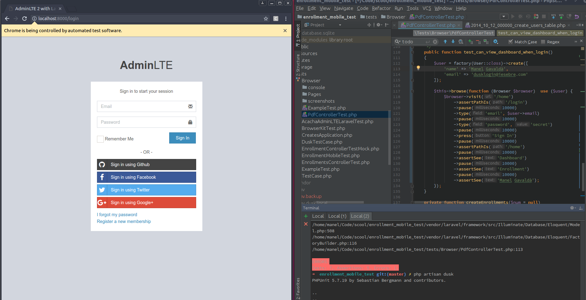Login Test 2
Una vegada dins el login escribim l'email de l'usuari creat més dalt en el camp email.
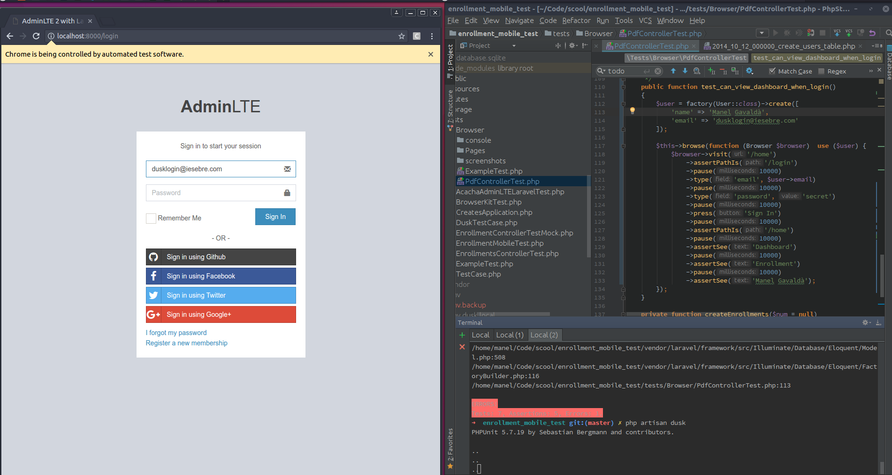Login Test 3
Escribim la password de l'usuari creat (creat sense password, per tant la password es secret), i apretem el boto Sign In.
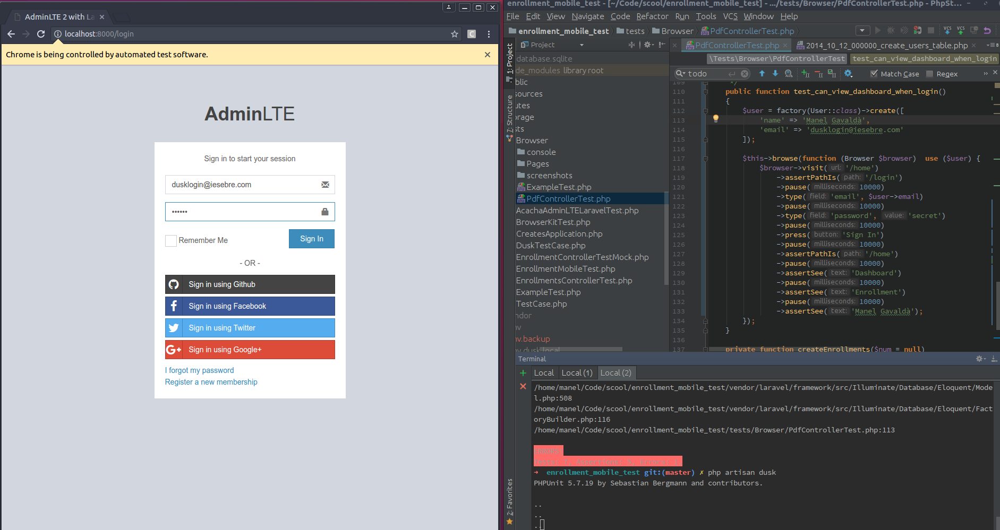Login Test 4
Una vegada dins ens fiquem a comprovar les coses més importants de la pàgina. En aquest cas comprovo que es veigue Manel Gavaldà (nom de l'usuari), Dashboard (nom de la pàgina) i 'Enrollments'.
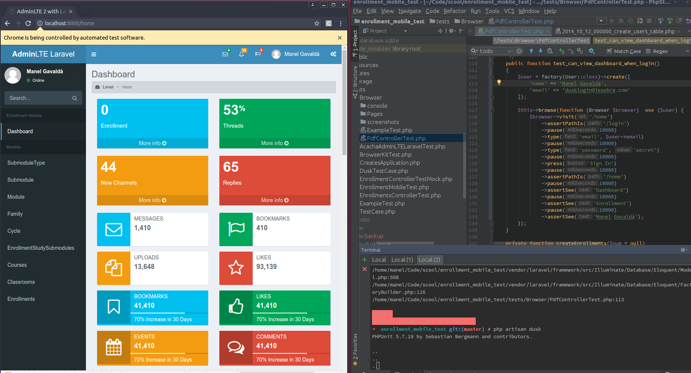Login Test 5
Aqui es tanca l'aplicació i és pot veure que totes les assertions han sigut correcte i els testos han funcionat al 100%.
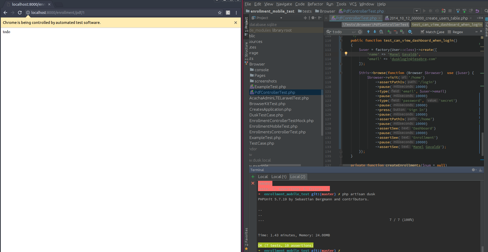Testos Api
Testos per comprovar el bon funcionament de la nostra api:
- Funcionament del crud.
- Permissos.
- Autorització.
- Respostes
Codi Testos
repository= Mockery::mock(EnrollmentRepository::class);
}
//S'executa al finalitzar els testos
public function tearDown()
{
Mockery::close();
}
protected function normalLogin()
{
$normalUser = factory(User::class)->create();
$this->actingAs($normalUser);
}
protected function adminLogin()
{
Permission::create(['name' => 'browse enrollments']);
Permission::create(['name' => 'read enrollments']);
Permission::create(['name' => 'edit enrollments']);
Permission::create(['name' => 'add enrollments']);
Permission::create(['name' => 'delete enrollments']);
$role = Role::create(['name' => 'manage enrollments']);
$role->givePermissionTo('browse enrollments');
$role->givePermissionTo('read enrollments');
$role->givePermissionTo('edit enrollments');
$role->givePermissionTo('add enrollments');
$role->givePermissionTo('delete enrollments');
$adminUser = factory(User::class)->create();
$this->actingAs($adminUser->assignRole("manage enrollments"));
}
public function testIndexNotLogged()
{
$this->get('enrollments');
$this->assertRedirectedTo('login');
}
private function createDummyEnrollments()
{
$enrollment1 = new Enrollment();
$enrollment2 = new Enrollment();
$enrollment3 = new Enrollment();
$enrollments = [
$enrollment1,
$enrollment2,
$enrollment3,
];
return collect($enrollments);
}
/**
* User without redirect to login.
* @group failing
* @return void
*/
public function testIndexWithoutUser()
{
$this->app->instance(EnrollmentRepository::class, $this->repository);
$this->call('GET', 'enrollments');
//Redirect.
$this->assertResponseStatus(302);
}
/**
* User without permission see unauthorized.
* @group failing
* @return void
*/
public function testIndexWithoutPermission()
{
//Fase 1 : preparació -> isolation/mocking
$this->normalLogin();
$this->app->instance(EnrollmentRepository::class, $this->repository);
$this->call('GET', 'enrollments');
//Unauthorized.
$this->assertResponseStatus(403);
}
/**
* User with permission can login.
* @group failing
* @return void
*/
public function testIndexWithPermission()
{
//Fase 1 : preparació -> isolation/mocking
$this->adminLogin();
$this->app->instance(ModuleRepository::class, $this->repository);
$this->call('GET', 'modules');
$this->assertResponseOk();
$this->assertViewHas('modules');
$modules = $this->response->getOriginalContent()->getData()['modules'];
$this->assertInstanceOf(\Illuminate\Support\Collection::class, $modules);
}
/**
* Store modules with permission can login.
* @group failing
* @return void
*/
public function testStore()
{
$this->normalLogin();
$this->call('GET', 'modules');
$this->post('modules');
$modules = $this->response->getOriginalContent();
$this->assertEquals(count($modules),1);
}
/**
* Delete modules with permission can login.
* @group failing
* @return void
*/
public function testDelete()
{
$this->normalLogin();
$this->call('GET', 'modules');
$this->delete('modules');
$modules = $this->response->getOriginalContent();
$this->assertEquals(count($modules),1);
}
/**
* User without permission see unauthorized.
* @group failing
* @return void
*/
public function nonLogedUserCantSeeDashboard()
{
//Fase 1 : preparació -> isolation/mocking
$this->app->instance(EnrollmentRepository::class, $this->repository);
$this->call('GET', 'home');
$this->assertResponseStatus(403);
}
/**
* User without permission see unauthorized.
* @group failing
* @return void
*/
public function logedUserCanSeeDashboard()
{
//Fase 1 : preparació -> isolation/mocking
$this->normalLogin();
$this->app->instance(EnrollmentRepository::class, $this->repository);
$this->call('GET', 'home');
$this->assertResponseOk();
}
}
Resultat
En aquesta captura podem veure tant el resultat dels testos api com els del dusk ja que el fitxer phpunit el tinc configurat perquè s'executin els 2 alhora. En el test provo diverses operacions de crud amb usuaris sense autenticar, autenticats sense permissos i autenticats en permissos.
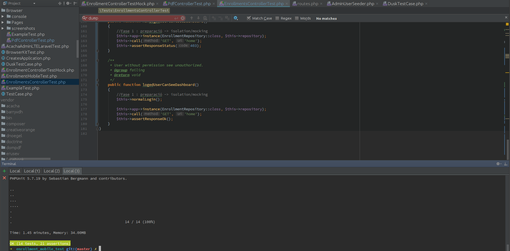Continuos integration i qualitat del projecte
Readme
Readme del projecte on podem veure l'informació de projecte, la seva instal·lació, casos dús, agraïments i badges per informar de l'estat del paquet.
Scrutinizer
Scrutinizer és una eina de CI molt important per control·lar la qualitat del projecte ja que ens mira si el codi fa pudor (code smells), mirant codi repetit, bones pràctiques, etc...
Class Interval
very good [8, 10]
good [6, 8)
satisfactory [4, 6)
pass [2, 4)
critical [0, 2)
Travis
Eina que ens vigila que els testos segueixin funcionant al fer canvis a la nostra aplicació i pujar-la.
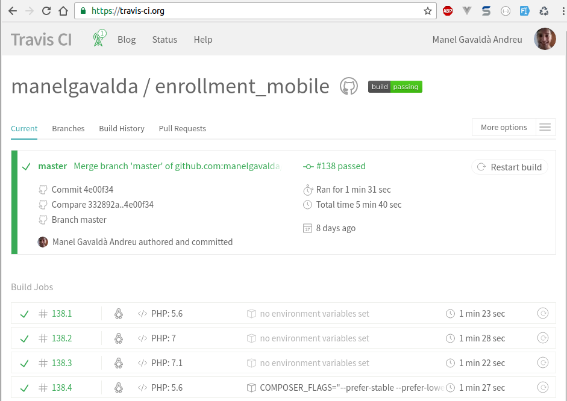StyleCI
Eina que ens dirà si el nostre codi segueix l'estil de codi php estàndard(espais, tabulacions, etc...) i ens ajudarà a solucionar-ho mitjançant pull-requests.
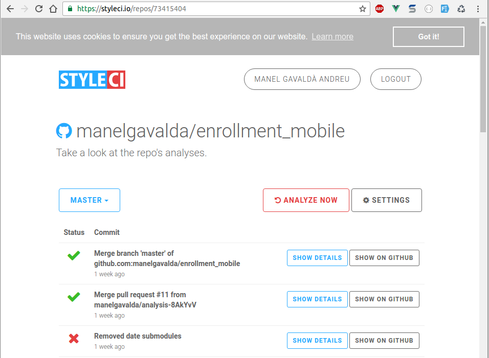Packagist
Repositori principal de laravel i que el composer fa servir per instal·lar paquets, útil ja que et deixarà fer un control de versions senzill i et donarà informació sobre l'estat i descarges del teu paquet.
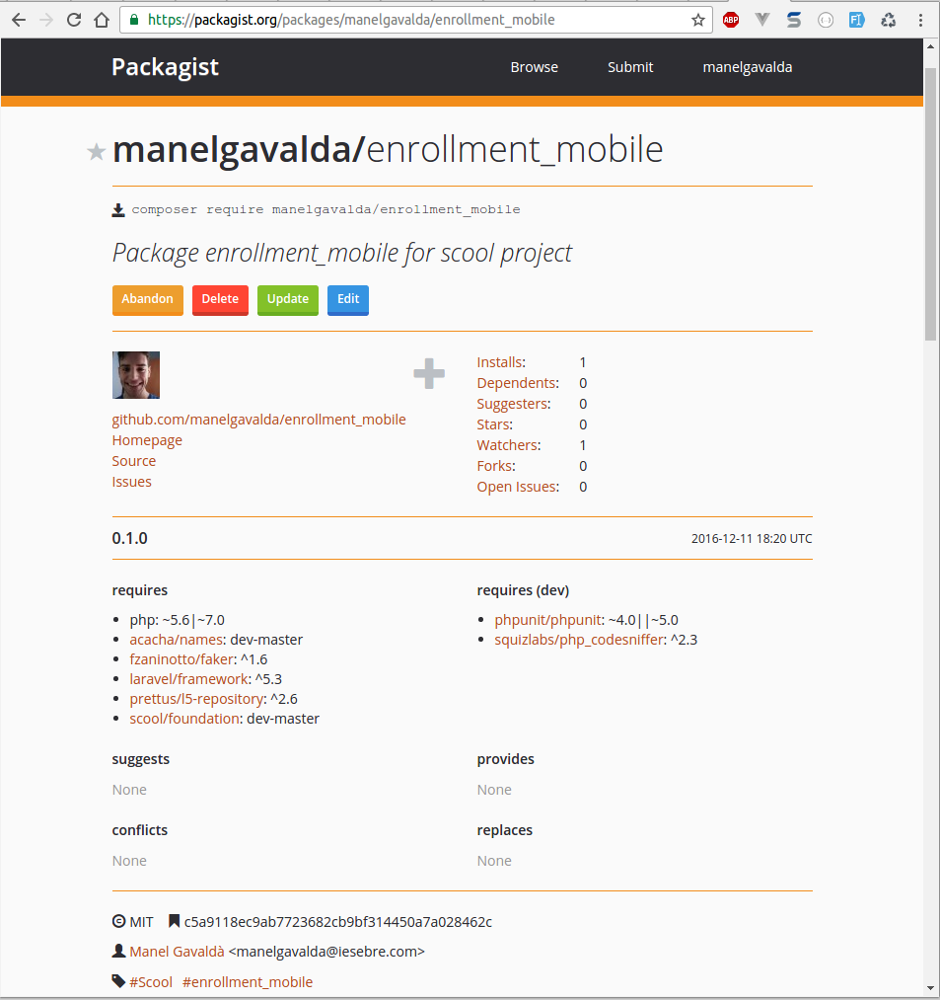SOLID
Single Responsability
Es tracta de destinar cada cada classe a una finalitat senzilla i concreta. Exemple en el control·lador d'enrollments on només tenim els mètodes per control·lar els enrollments:
public function store(EnrollmentCreateRequest $request)
{
try {
$this->validator->with($request->all())->passesOrFail(ValidatorInterface::RULE_CREATE);
$enrollment = $this->repository->create($request->all());
$response = [
'message' => 'Enrollment created.',
'data' => $enrollment->toArray(),
];
if ($request->wantsJson()) {
return response()->json($response);
}
return redirect()->back()->with('message', $response['message']);
} catch (ValidatorException $e) {
if ($request->wantsJson()) {
return response()->json([
'error' => true,
'message' => $e->getMessageBag()
]);
}
return redirect()->back()->withErrors($e->getMessageBag())->withInput();
}
}
Com podem veure tot el codi refrent només serveix per guardar els enrollments que creem i els validadors, transformers i altres els tenim injectats.
Open/Closed
Crear classes extensibles sense necessitat de canviar-les desde el codi.
class Enrollment extends Model implements Transformable
{
//afegim model stateful per als models que volem qeu tinguin estat, com en el name per als noms. Afegir columna state ala migracio de l'objecte(i ens dira com esta l'objecte de la taula(open,closed,etc), es configurable. state amb nullabel si pot ser que no es guarde
use TransformableTrait,Nameable, RecordsActivity;//StatefulTrait;
//public $timestamps = false;
//all camps
protected $fillable = ['id','name','validated','finished', 'user_id', 'study_id','course_id','classroom_id'];
//TODO: mirar estats (enrollment). Implementar i definir estats(exemple porta(esborrany,valida,feta).
//TODO: Necessari vàlid i no.
//TODO: Afegir rutes minim a un Model.
protected $events = [
'created' => EnrollmentCreated::class
];
...
Per exemple aquesta classe l'exten un model on té el code genèric perquè sigui un model i desprès hereda d'una interfície on hi ha més codi. També usa traits de forma que injecta codi per donar noves funcionalitats a la classe.
Substitució Liskov
Els objectes tendriem que poder ser reemplaçats per instàcies dels mateixos sense afectar el bon funcionament del programa.
abstract class Controller
{
/**
* The middleware registered on the controller.
*
* @var array
*/
protected $middleware = [];
/**
* Register middleware on the controller.
*
* @param array|string|\Closure $middleware
* @param array $options
* @return \Illuminate\Routing\ControllerMiddlewareOptions
*/
public function middleware($middleware, array $options = [])
{
foreach ((array) $middleware as $m) {
$this->middleware[] = [
'middleware' => $m,
'options' => &$options,
];
}
return new ControllerMiddlewareOptions($options);
}
...
Per exemple cada control·lador partiria d'aquesta base per funcionar.
Segregació de l'interfície
Les interfícies tenen que ser específiques per una finalitat concreta. Preferible tindre moltes interfícies específiques que no una que ho tingui tot ja que serà poc reusable.
interface Authenticatable
{
/**
* Get the name of the unique identifier for the user.
*
* @return string
*/
public function getAuthIdentifierName();
/**
* Get the unique identifier for the user.
*
* @return mixed
*/
public function getAuthIdentifier();
/**
* Get the password for the user.
*
* @return string
*/
public function getAuthPassword();
/**
* Get the token value for the "remember me" session.
*
* @return string
*/
public function getRememberToken();
/**
* Set the token value for the "remember me" session.
*
* @param string $value
* @return void
*/
public function setRememberToken($value);
/**
* Get the column name for the "remember me" token.
*
* @return string
*/
public function getRememberTokenName();
}
Exemple d'interfície amb els mètodes específics perquè una classe sigui autenticable.
Inversió de dependències
Ús d'extraccions per aconseguir desacoplar classes.
public function __construct(EnrollmentRepository $repository, EnrollmentValidator $validator)
{
$this->repository = $repository;
$this->validator = $validator;
}
Seguretat
Autenticació API
En aquest cas uso passport per protegir la api. Laravel Passport et proveeix d'un sistema Oauth2 que funciona amb un sistema de préstec (leasing) de token on el servidor control·la l'estat i la validesa del token. Usat per control·lar que les peticions es faiguen amb un token vàlid. Per exemple al fer el login el servidor oauth en retorna un token, que ens el guardem per fer totes les peticions posteriors i al fer el logout el·liminarem el token.

Permissos API
Aqui control·larem gràcies a laravel-permission que els usuaris que faiguen les peticions tinguin permissos per gestionar el model. Juntament amb l'estructura que ens dona el l5-repository ens servirà per control·lar-ho ja que ens crea les request per control·lar-ho. Ens crearà una taula de permissos on els definirem i utilitzant un seeder els crearem i desprès asignarem als usuaris que vulguem.
Migració de laravel-permission:
public function up()
{
$tableNames = config('permission.table_names');
$foreignKeys = config('permission.foreign_keys');
Schema::create($tableNames['permissions'], function (Blueprint $table) {
$table->increments('id');
$table->string('name');
$table->string('guard_name');
$table->timestamps();
});
Schema::create($tableNames['roles'], function (Blueprint $table) {
$table->increments('id');
$table->string('name');
$table->string('guard_name');
$table->timestamps();
});
Schema::create($tableNames['model_has_permissions'], function (Blueprint $table) use ($tableNames, $foreignKeys) {
$table->integer('permission_id')->unsigned();
$table->morphs('model');
$table->foreign('permission_id')
->references('id')
->on($tableNames['permissions'])
->onDelete('cascade');
$table->primary(['permission_id', 'model_id', 'model_type']);
});
Schema::create($tableNames['model_has_roles'], function (Blueprint $table) use ($tableNames, $foreignKeys) {
$table->integer('role_id')->unsigned();
$table->morphs('model');
$table->foreign('role_id')
->references('id')
->on($tableNames['roles'])
->onDelete('cascade');
$table->primary(['role_id', 'model_id', 'model_type']);
});
Schema::create($tableNames['role_has_permissions'], function (Blueprint $table) use ($tableNames) {
$table->integer('permission_id')->unsigned();
$table->integer('role_id')->unsigned();
$table->foreign('permission_id')
->references('id')
->on($tableNames['permissions'])
->onDelete('cascade');
$table->foreign('role_id')
->references('id')
->on($tableNames['roles'])
->onDelete('cascade');
$table->primary(['permission_id', 'role_id']);
});
}
Permissos API 2
Creació i assignació de permissos a un rol:
public function run()
{
Permission::create(['name' => 'browse enrollments']);
Permission::create(['name' => 'read enrollments']);
Permission::create(['name' => 'edit enrollments']);
Permission::create(['name' => 'add enrollments']);
Permission::create(['name' => 'delete enrollments']);
$role = Role::create(['name' => 'manage enrollments']);
$role->givePermissionTo('browse enrollments');
$role->givePermissionTo('read enrollments');
$role->givePermissionTo('edit enrollments');
$role->givePermissionTo('add enrollments');
$role->givePermissionTo('delete enrollments');
}
Assignació de rol a usuari:
factory(Manelgavalda\EnrollmentMobileTest\User::class)->create([
"name" => "Manel Gavaldà Andreu",
"email" => "manelgavalda@iesebre.com",
"password" => bcrypt(env('ADMIN_PWD', 'password'))]
)->assignRole("manage enrollments");
Ús de token
Ús de token per al login usant vue. El tipus d'autenticació és la de password dins el passport. Amb aquesta petició agafo l'usuari introduït i si es correcte ens guardarà al token al localStorage per desprès fer peticions i ens redireccionarà dins l'aplicació. És necessita la password del token dins la bd i que concedeixi amb el que usem a l'aplicació mòbil.
login: function () {
var formData = new FormData()
formData.append('grant_type', constants.OAUTH_GRANT_TYPE)
formData.append('client_id', constants.OAUTH_CLIENT_ID)
formData.append('client_secret', constants.OAUTH_CLIENT_SECRET)
formData.append('username', this.email)
formData.append('password', this.password)
formData.append('scope', '')
console.log('Login')
axios.post('/oauth/token', formData)
.then((res) => {
axios.defaults.headers.common['Authorization'] = 'Bearer ' + res.data.access_token
localStorage.setItem('token', res.data.access_token)
console.log(res.data.access_token)
this.getUser()
this.$router.push({path: 'home'})
}, (error) => {
console.log(error)
})
}
Alertes patrons API
Control d'errors
Aqui poden veure que si no tenim permissos ens saltarà l'excepeció que hem definit. En aquest cas al veure els enrollments (index GET).
Control·lador:
public function index(EnrollmentBrowseRequest $request)
Request:
class EnrollmentBrowseRequest extends FormRequest
{
/**
* Determine if the user is authorized to make this request.
*
* @return bool
*/
public function authorize()
{
return Auth::user()->can('browse enrollments');
}
/**
* Get the validation rules that apply to the request.
*
* @return array
*/
public function rules()
{
return [
//
];
}
public function forbiddenResponse()
{
return Response::make('Permission denied on showing enrollments', 403);
}
}
Control d'errors 2
I ens saltaria la següent excepció:

Transformers
Aquí control·lem el nostre json resultant:
public function transform(Enrollment $model)
{
return [
'id' => (int) $model->id,
/* place your other model properties here */
'name' => $model->id,
'validated' => (bool)$model->validated,
'finished' => (bool)$model->finished,
'study_id' => (int)$model->study_id,
'course_id' => (int)$model->course_id,
'classroom_id' => (int)$model->classroom_id,
'created_at' => $model->created_at,
'updated_at' => $model->updated_at
];
}
I d'aquesta forma ho indiquem al mètode del control·lador:
return $this->transformer->transform($enrollment);
Transformers 2
Aqui tenim el resultat del json usant el transformador:
Frontend
Comunicació entre components
Aqui podem veure un exemple del component Full(Sidebar, Header i Footer) que és comunica amb el component que estem veient(Home) i que conté un altre component per les datatables.
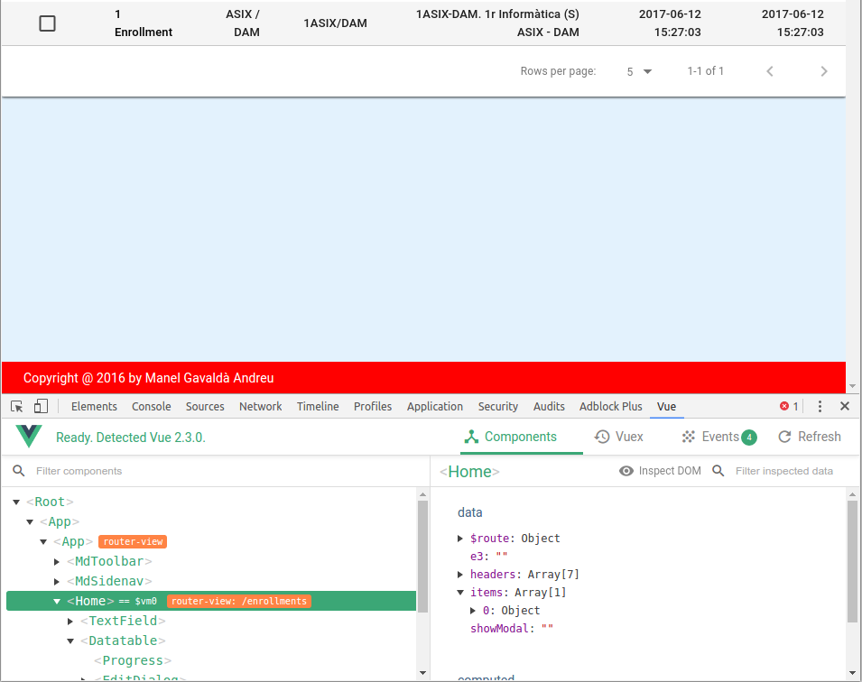Plantilles utilitzades
Per la part d'administració he utilitzat adminlte a partir del projecte adminlte-laravel. I per la part de client he utilitzat la plantilla vue-material Vue Material amb el següent tema:
Vue.material.registerTheme('manel', {
primary: {
color: 'red',
hue: 700
},
accent: 'black',
warn: 'red',
background: {
color: 'blue',
hue: 300
}
})
Programació de formularis
Per la part d'administració uso el paquet Acacha Forms per al formulari de registre i per la part de client uso un stepper del Vuetify.js amb camps inputs que desprès de cada pas és guarden a la base de dades.
Steper amb camps input dins que al apretar a següent ho guarda a la base de dades gràcies al stateful-eloquent. Al finalitzar la matrícula et salta un alert que quant apretes a enviar et porta directament a la taula d'enrollments teua on pots veure-hi els estats
Formulari Registre Admin
Formulari Matrícula Client
Formative Units
{{ submodule.name }}
{{ submodule.module.name}}
Back
Finish
Send enrollment?
You will get a notification when your enrollment is approved.
Cancel
Send
Components gràfics utilitzats. Client
Usats per l'aplicació client i extrets del Vuetifyjs:
- Stepper (Wizard Mobile)
- Lists
- Cards
- Modals
- Buttons
- Text Fields
- Datatable(amb buscador temps real, paginació, possibilitat d'editar.
- Alerts
- Footer
- Menus
- Sidebar
- Header
- Icons
- Selects
- Toolbars
Components gràfics utilitzats. Servidor
Usats web i extrets de la plantilla adminlte2 (més importants):
- Cards
- Charts(de chart js)
- Tables
- Widgets del dashboard
Publicació del paquet
Provider
Fitxer on tinc tots els elements a publicar, factories, fitxer vue, carrega de migracions, testos, configuració, rutes i vistes de laravel...
registerNameServiceProvider();
$this->registerStatefulEloquentServiceProvider();
$this->app->bind(\Scool\EnrollmentMobile\Repositories\EnrollmentRepository::class, \Scool\EnrollmentMobile\Repositories\EnrollmentRepositoryEloquent::class);
$this->app->bind(\Scool\EnrollmentMobile\Repositories\ClassroomRepository::class, \Scool\EnrollmentMobile\Repositories\ClassroomRepositoryEloquent::class);
$this->app->bind(\Scool\EnrollmentMobile\Repositories\CourseRepository::class, \Scool\EnrollmentMobile\Repositories\CourseRepositoryEloquent::class);
$this->app->bind(\Scool\EnrollmentMobile\Repositories\EnrollmentStudySubmoduleRepository::class, \Scool\EnrollmentMobile\Repositories\EnrollmentStudySubmoduleRepositoryEloquent::class);
$this->app->bind(\Scool\EnrollmentMobile\Repositories\CycleRepository::class, \Scool\EnrollmentMobile\Repositories\CycleRepositoryEloquent::class);
$this->app->bind(\Scool\EnrollmentMobile\Repositories\FamilyRepository::class, \Scool\EnrollmentMobile\Repositories\FamilyRepositoryEloquent::class);
$this->app->bind(\Scool\EnrollmentMobile\Repositories\ModuleRepository::class, \Scool\EnrollmentMobile\Repositories\ModuleRepositoryEloquent::class);
$this->app->bind(\Scool\EnrollmentMobile\Repositories\SubmoduleRepository::class, \Scool\EnrollmentMobile\Repositories\SubmoduleRepositoryEloquent::class);
$this->app->bind(\Scool\EnrollmentMobile\Repositories\SubmoduleTypeRepository::class, \Scool\EnrollmentMobile\Repositories\SubmoduleTypeRepositoryEloquent::class);
$this->app->bind(\Scool\EnrollmentMobile\Repositories\PersonRepository::class, \Scool\EnrollmentMobile\Repositories\PersonRepositoryEloquent::class);
//:end-bindings:
// $this->app->bind(StatsRepositoryInterface::class,function() {
// return new CacheableStatsRepository(new StatsRepository());
// });
}
public function boot()
{
$this->defineRoutes();
$this->loadMigrations();
$this->publishFactories();
$this->publishConfig();
$this->publishTests();
$this->publishVueComponents();
$this->loadViews();
}
protected function defineRoutes()
{
if (!$this->app->routesAreCached()) {
$router = app('router');
$router->group(['namespace' => 'Scool\EnrollmentMobile\Http\Controllers'], function () {
require __DIR__.'/../Http/routes.php';
});
}
}
public function loadMigrations()
{
$this->loadMigrationsFrom(SCOOL_ENROLLMENT_MOBILE_PATH . '/database/migrations');
}
private function loadViews()
{
$this->loadViewsFrom(SCOOL_ENROLLMENT_MOBILE_PATH . '/resources/views', 'enrollment_mobile');
}
public function publishFactories()
{
$this->publishes(
ScoolEnrollmentMobile::factories(), "enrollment_mobile"
);
}
public function publishVueComponents()
{
$this->publishes(
ScoolEnrollmentMobile::vue(), "enrollment_mobile"
);
}
private function publishConfig()
{
$this->publishes(
ScoolEnrollmentMobile::configs(), "enrollment_mobile"
);
$this->mergeConfigFrom(
SCOOL_ENROLLMENT_MOBILE_PATH . '/config/payment.php', 'enrollment_mobile'
);
}
public function publishTests()
{
$this->publishes(
[
SCOOL_ENROLLMENT_MOBILE_PATH .'/tests/EnrollmentMobileTest.php' => 'tests/EnrollmentMobileTest.php'
], "enrollment_mobile"
);
}
/*
* Register acacha/names Service Provider.
*
*/
protected function registerNameServiceProvider()
{
$this->app->register(NamesServiceProvider::class);
}
/*
* Register acacha/stateful-eloquent Service Provider.
*
*/
protected function registerStatefulEloquentServiceProvider()
{
$this->app->register(StatefulServiceProvider::class);
}
}
Publicació 2
I en el paquet test podrem veure que s'han publicat les vistes i factories del projecte, per tant per fer funcionar les vistes vue necessitarem afegir-les al app.js o bootstrap.js (qualsevol fitxer que compil·le el laravel mix).
Vue.component('dashboard-small-box', require('./components/dashboard/SmallBox.vue'))
Vue.component('dashboard-increase-button', require('./components/dashboard/IncreaseButton.vue'))
Vue.component('activity-feed', require('./components/dashboard/ActivityFeed.vue'))
Vue.component('chart', require('./components/dashboard/Chart.vue'))
Gràfiques, informes i temps real
Gràfiques
Codi chartjs exemple, Crida desde el component vue on tenim el codi i en el qual ens comuniquem per daonr-li dades. Invocació:
Component vue.
render() {
let data = {
labels: this.dataLabels ,
datasets: [
{
label: "My First dataset",
fill: false,
lineTension: 0.1,
backgroundColor: this.color,
borderColor: "rgba(75,192,192,1)",
borderCapStyle: 'butt',
borderDash: [],
borderDashOffset: 0.0,
borderJoinStyle: 'miter',
pointBorderColor: "rgba(75,192,192,1)",
pointBackgroundColor: "#fff",
pointBorderWidth: 1,
pointHoverRadius: 5,
pointHoverBackgroundColor: "rgba(75,192,192,1)",
pointHoverBorderColor: "rgba(220,220,220,1)",
pointHoverBorderWidth: 2,
pointRadius: 1,
pointHitRadius: 10,
data: this.dataValues,
spanGaps: false,
}
]
};
console.log(this.$children)
let context = this.$refs.canvas.getContext('2d')
let chart= new Chart(context, {
type: 'bar',
data: data
})
this.legend = chart.generateLegend()
}
Gràfiques 2
Control·lador que usem per omplir el gràfic i comunicació entre components vue. Control·lador:
public function index()
{
$data = [];
$data['labels1'] = "['January', 'February', 'March', 'April', 'May', 'June', 'July']";
$data['values1'] = "[10, 2, 4, 23, 43, 54]";
$data['labels2'] = "['January', 'February', 'March', 'April', 'May', 'June', 'July']";
$data['values2'] = "[10, 42, 4, 23, 43, 54]";
return view('enrollment_mobile::dashboard.dashboard', $data);
}
Comunicació entre components vue. Utilitzant props.
props: {
labels: {
type: Array,
default_values: ['January', 'February', 'March', 'April', 'May', 'June', 'July']
},
values: {
type: Array,
default_values: [10, 42, 4, 23, 43, 54]
},
url : {
type: String
}
}
Gràfiques 3
Comunicació vía props usant vue.
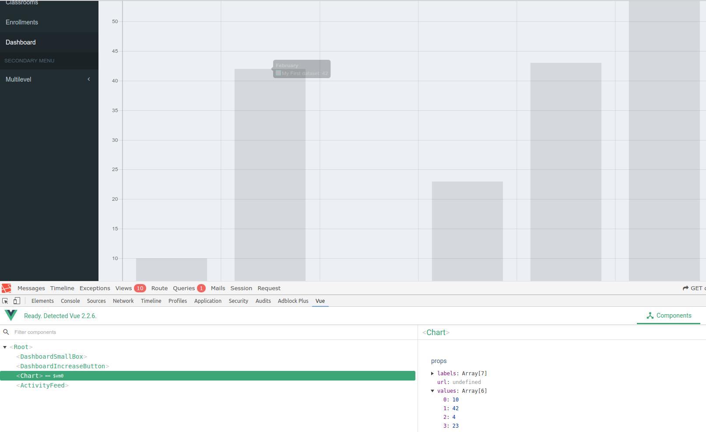Informes
Codi de rutes.
Route::get('enrollment/pdf/{id}', 'PdfController@enrollment');
Route::get('enrollmentspdf/pdf', 'PdfController@enrollments');
Route::get('enrollmentspdf/view', 'PdfController@enrollments_view');
Codi control·lador. Usant el paquet laravel-dompdf per crear pdf a partir de HTML simple.
public function enrollments()
{
$enrollments = Enrollment::all();
$pdf = App::make('dompdf.wrapper');
$view = View::make('pdf.enrollments')->with('enrollments', $enrollments)->render();
$pdf->loadHTML($view);
return $pdf->stream('enrollments');
}
public function enrollments_view()
{
$enrollments = Enrollment::all();
return view('pdf.enrollments')->with('enrollments', $enrollments);
}
Informes 2
Llistat d'enrollments vía pdf.
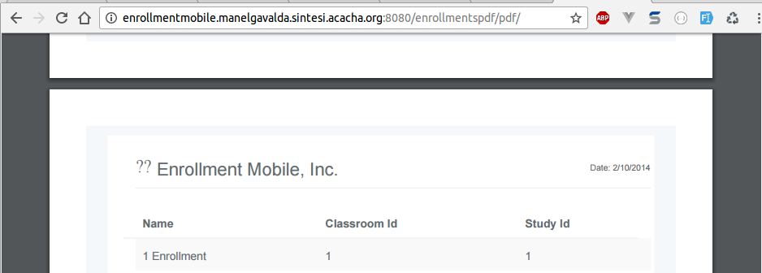 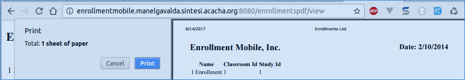Temps real
Codi perquè funcioni el temps real i per això necessitem el pusher que la rebre un event ens executarà l'acció que ens interesa(incrementar enrollments).
this.$echo.channel('dashboard').listen(this.eventName(), (payload) => {
console.log('Event received!!!!!!!!!')
console.log(payload);
this.value++
});
},
methods: {
eventName() {
return "\\Scool\\EnrollmentMobile\\Events\\" +voca.capitalize(pluralize.singular(this.name))+'Created'
},
dashboardValue (name) {
var component = this
axios.get('/dashboard/' + name + '/number')
.then(function (response) {
console.log(response.data)
component.value = response.data
component.name = window.pluralize(component.name)
})
.catch(function (error) {
console.log(error)
});
},
}
Necessitarem indicar les nostres dades del pusher (api-key, server-key, etc...)
Temps real 2
Exemple al dashboard mostrant les matrícules en temps real.

Altres
En aquest cas usat per fer un reset de la contrasenya. Per fer-ho crearem una nova blade amb l'estrucura de l'email que voldrem veure email (amb markdown HTML5).
@component('mail::message')
# Hello!
Reset Password for Enrollment Mobile Application. Restore Password Application:
@component('mail::button', ['url' => $url])
Reset Password
@endcomponent
Thanks, Manel Gavaldà Andreu
@endcomponent
Email 2
Una vegada hem introduït l'email apretarem el botó i ens arribarà el següent correu per restaurar la contrasenya desde un formulari bàsic de l'aplicació.
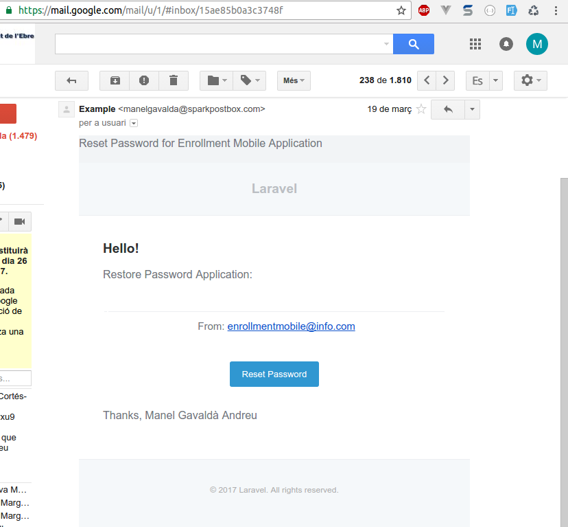Ús d'esdeveniments
El laravel disposa d'un esdeveniment que es dispara al registar un nou usuari(NewRegisteredUser), i que jo faig servir per donar permissos a la meua aplicació als usuaris que es registrin.
public function handle(NewRegisteredUserEvent $event)
{
$event->user->assignRole("manage enrollments");
}
protected $listen = [
'Manelgavalda\EnrollmentMobileTest\Events\SomeEvent' => [
'Manelgavalda\EnrollmentMobileTest\Listeners\EventListener',
],
'Manelgavalda\EnrollmentMobileTest\Events\NewRegisteredUserEvent' => [
'Manelgavalda\EnrollmentMobileTest\Listeners\GrantPermissionsListener',
]
];
Notificacions
Aqui tinc el codi que fa funcionar l'enviament de restaurar contrasenya desde l'email.
token = $token;
}
public function via($notifiable)
{
return ['mail'];
}
public function toMail($notifiable)
{
$url = 'password/reset/' . $this->token;
return (new MailMessage)
->markdown('mails.resetpassword', ['url' => $url])
->subject('Enrollment Mobile Password Reset');
}
/**
* Get the array representation of the notification.
*
* @param mixed $notifiable
* @return array
*/
public function toArray($notifiable)
{
return [
//
];
}
}
Ús de caché
Retornant caché guardat amb una key enrollments i amb una duració de 5 minuts i una vegada acabada tornarà a fer la consulta a la bd per agafar els enrollments.
public function enrollments_view()
{
Cache::put('enrollments',Enrollment::all(), 5);
return view('pdf.enrollments')->with('enrollments', Cache::get('enrollments'));
}
Uso el cache que ve per defecte amb laravel (file). D'aquqesta forma l'activem
➜ enrollment_mobile_test git:(master) ✗ php artisan config:cache
Configuration cache cleared!
Configuration cached successfully!
➜ enrollment_mobile_test git:(master) ✗
'default' => env('CACHE_DRIVER', 'file'),
Cache 2
La segona vegada que recarguem la pàgina no ens executarà la consulta dels enrolments i l'agafarà del cache per tant els canvis a la bd fet durant els 5 minuts no els veurem.
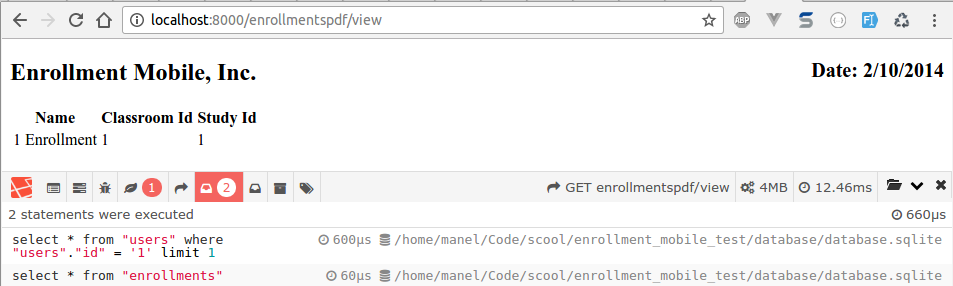Comandes artisan
Exemple de comanda artisan que hem crea un enrollment bàsic (útil per si hem pasa algo amb l'enrollment i no vul executar el seeder).
Codi comanda i registre al kernel:
app->environment('local', 'testing')) {
$this->app->register(DuskServiceProvider::class);
}
echo 'Enrollment Created';
}
}
protected $commands = [
Commands\RandomEnrollment::class
];
Comandes artisan 2
Aqui podem veure el resultat (error causat per no registar la comanda al kernel, i desprès li afegeixo un echo per tindre informació al acabar):
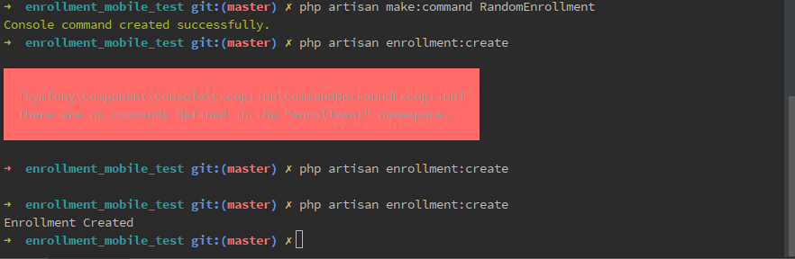Referències externes
- http://blog.gauffin.org/2012/05/solid-principles-with-real-world-examples/
- http://acacha.org/mediawiki/Design_Patterns#SOLID
- https://www.genbetadev.com/paradigmas-de-programacion/solid-cinco-principios-basicos-de-diseno-de-clases
- https://github.com/laravel/laravel
- https://laravel.com/docs/5.4/passport
- https://github.com/laravel/passport
- https://oauth.net/2/
- http://acacha.org/mediawiki/Laravel_Passport#.WUAMYMx96kA
- http://acacha.org/mediawiki/OAuth#.WUAMm8x96kA
- https://github.com/spatie/laravel-permission
- https://github.com/andersao/l5-repository
- https://github.com/acacha/l5-repository
- https://adminlte.io/themes/AdminLTE/index2.html
- https://github.com/acacha/adminlte-laravel
- https://vuematerial.github.io/#/
- https://www.npmjs.com/package/acacha-forms
- https://github.com/acacha/forms
- https://github.com/acacha/stateful-eloquent
- https://packagist.org/packages/acacha/stateful-eloquent
- http://www.chartjs.org/
- https://github.com/chartjs
- https://github.com/barryvdh/laravel-dompdf
- https://laravel.com/docs/5.4/eloquent-relationships#eager-loading
- https://pusher.com/
- https://scrutinizer-ci.com/g/manelgavalda/enrollment_mobile/
- https://github.com/franzliedke/studio